Shot table — sequence m05¶
How this page works
Generated from Sam's shot table (Coyote_shot_table.md), the single authority for every shot of sequence m05.
A change to a shot is made in that table first; this page is rebuilt from it and never edited by hand.
Breakdown runs are history and inputs. Thumbnails are approved boards only; "—" means no approved board yet.
Prompts, pose descriptions, generation ids, approver quotes and checksums are withheld here.
Folder paths are plain text on the project drive, under G:/My Drive/projects/coyote/; they are not links.
Built 2026-10-24 16:11.
Index¶
| Shot | Scene | Type | Length (s) | Action | Camera (lens · move · height) | Lighting | Was | Status | START | END | Boards folder | Previs folder |
|---|---|---|---|---|---|---|---|---|---|---|---|---|
m05_01_01 |
1 | close | 10 | Breakdown: Black; then a ground-level close on a radio half-submerged in black water beside the Captain's bare face, motionless in the silt. | 50 mm · static · 0.25 m | late day (fall 0) | — | draft | — | — | shots/m05_01_01/boards/ |
none yet |
m05_01_02 |
1 | medium | 9 | Breakdown: Low medium on the Captain pushing up onto one arm in the shallows beside a cypress root, coughing. | 40 mm · static · 0.6 m | late day (fall 0) | — | draft | — | — | shots/m05_01_02/boards/ |
none yet |
m05_01_03 |
1 | close | 10 | Breakdown: Low close on her right hand flat in the black silt. | 80 mm · static · 0.4 m | late day (fall 0) | NEW | draft | — | — | shots/m05_01_03/boards/ |
none yet |
m05_01_04 |
1 | medium | 10 | Breakdown: Low medium as the Captain gets to her feet among the cypress trunks, deliberate and silent. | 40 mm · track 0, 0, 0.6 · 1.1 m | late day (fall 0) | m05_01_03 |
draft | — | — | shots/m05_01_04/boards/ |
none yet |
m05_01_05 |
1 | wide | 10 | Breakdown: Over her shoulder as she pushes through thick wet curtains of Spanish moss into a clearing. | 40 mm · crane 0, 0.8, 0.2 · 1.2 m | late day (fall 0) | m05_01_04 |
draft | — | — | shots/m05_01_05/boards/ |
none yet |
m05_02_01 |
2 | wide | 3 | Script (3 paragraphs (master)): EXT. SAWGRASS HOLLOW — DUSK The Captain advances in a shallow stoop through sawgrass half a metre high, ankle-deep in mud. A sharp, mechanical hydraulic chirp rings out ahead. An NAIC quadruped scout drone drops down onto a fallen cypress trunk far ahead, beyond the standing bald cypress. The cypress is a tall, broad tree whose trunk is wide enough to hide her whole body, the sawgrass a metre high around its base and a metre or more high all the way across to the wreck area. The drone lands facing away from her, its LiDAR dark. Breakdown: Dusk wide framing of the sawgrass hollow, the camera on Leal's staged set-up, looking across the hollow and slightly toward the park. |
35 mm · static · 1.4 m | dusk (fall 0.3); ruling: sun behind the park; Freya sun az -124.6 el 4 (UNCONFIRMED vs ruling) | — | boards approved (shot draft) | 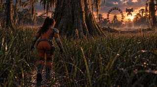 |
shots/m05_02_01/boards/ |
shots/m05_02_01/previs/ |
|
m05_02_02 |
2 | wide | 3 | Script (1 paragraphs (master)): STEP 1 (The Tree): As the drone settles, its green LiDAR fan comes on and sweeps the field beyond it, opposite her, nowhere near her side. (game input withheld) Action: She lunges right, dropping low as she slides flush behind the bald cypress trunk that stands between her and the drone as it touches down, the fan only now coming on and sweeping the far field. The drone is landed, legs planted on the fallen trunk. Breakdown: She moves on, fast and low and ankle-deep, toward the standing cypress as the quadruped drone settles onto the fallen trunk beyond the standing cypress, facing away from her, its green beam sweeping the open field beyond it, opposite her. |
35 mm · static · 1.4 m | dusk (fall 0.3); ruling: sun behind the park; Freya sun az -124.6 el 4 (UNCONFIRMED vs ruling) | — | boards approved (shot draft) | 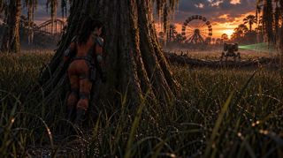 |
shots/m05_02_02/boards/ |
shots/m05_02_02/previs/ |
|
m05_02_03 |
2 | insert | 3 | Script (1 paragraphs (master)): STEP 2 (The Turn): Opens tight on the drone pivoting with a mechanical whine. Its sensor array snaps green, locking onto the cypress tree. The machine lowers in a hover into position, advancing to investigate. (game input withheld) Action: Anticipating the sightline, she drops low out from the trunk, snake-crawling down and to the left, away from the drone, into dense metre-high sawgrass, sinking flat into the grass and the ankle-deep water just as the drone sweeps the tree bark. Breakdown: Tight insert of the human-sized quadruped drone on the fallen trunk beyond the standing cypress, twin turbines vertical, at first facing away out over the far field, then pivoting about 180 degrees with a mechanical whine; its front cluster of green lenses snaps on, locking onto the standing cypress (Step 2 - The Turn). |
80 mm · static · 1 m | dusk (fall 0.3); ruling: sun behind the park; Freya sun az -124.6 el 4 (UNCONFIRMED vs ruling) | — | boards approved (shot draft) | shots/m05_02_03/boards/ |
shots/m05_02_03/previs/ |
||
m05_02_04 |
2 | medium | 4.5 | Script (1 paragraphs (master)): STEP 2 (The Turn): Opens tight on the drone pivoting with a mechanical whine. Its sensor array snaps green, locking onto the cypress tree. The machine lowers in a hover into position, advancing to investigate. (game input withheld) Action: Anticipating the sightline, she drops low out from the trunk, snake-crawling down and to the left, away from the drone, into dense metre-high sawgrass, sinking flat into the grass and the ankle-deep water just as the drone sweeps the tree bark. Breakdown: Medium view behind the standing bald cypress trunk away from the sun. |
50 mm · track -0.3, 0, -0.2 · 0.5 m | dusk (fall 0.3); ruling: sun behind the park; Freya sun az -124.6 el 4 (UNCONFIRMED vs ruling) | NEW | boards approved (shot draft) | 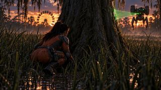 |
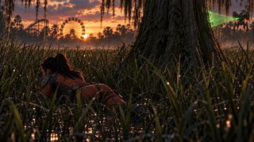 |
shots/m05_02_04/boards/ |
shots/m05_02_04/previs/ |
m05_02_05 |
2 | close | 4 | Script (2 paragraphs (master)): STEP 3 (Hold Still): Camera cuts and locks back on her position at the end of Step 2. She lies motionless beneath the reeds, swamp silt settling over her turned cheek. The scout stops directly adjacent to her; its sensor head clicks through a wide 180-degree scan. (game input withheld) Action: She holds completely still until the tension bar drains. The drone finds no target signature, disengages, and flies off toward the west ridge. Breakdown: Close view locked on pilot lying motionless beneath metre-high reeds and sawgrass. |
50 mm · static · 0.3 m | dusk (fall 0.3); ruling: sun behind the park; Freya sun az -124.6 el 4 (UNCONFIRMED vs ruling) | m05_02_04 |
boards approved (shot draft) | 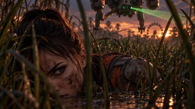 |
shots/m05_02_05/boards/ |
shots/m05_02_05/previs/ |
|
m05_02_06 |
2 | close | 3 | Script (1 paragraphs (master)): The scout stops directly adjacent to her; its sensor head clicks through a wide 180-degree scan. (game input withheld) Action: She holds completely still until the tension bar drains. The drone finds no target signature, disengages, and flies off toward the west ridge. Breakdown: Silt has settled on her turned cheek; the drone still hovers adjacent, its sensor head clicking through the 180° sweep. |
50 mm · static · 0.3 m | dusk (fall 0.3); ruling: sun behind the park; no Freya file | m05_02_05 |
boards approved (shot draft) | 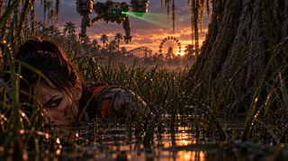 |
shots/m05_02_06/boards/ |
shots/m05_02_06/previs/ |
|
m05_03_01 |
3 | wide | 8 | Breakdown: Low wide as the Captain reaches the impact clearing: no fuselage, only shattered carbon hulls, severed conduits and scorched ribs smouldering in the shallow mud, thin grey plumes rising into the canopy. | 40 mm · track 0, 0, 0.4 · 1.1 m | dusk (fall 0.3) | — | draft | — | — | shots/m05_03_01/boards/ |
none yet |
m05_03_02 |
3 | insert | 8 | Breakdown: One frame holds it: in the foreground an empty ejection seat canted at the edge of the wreckage, its harness RIPPED THROUGH, the buckle still latched. | 50 mm · static · 0.5 m | dusk (fall 0.3) | — | draft | — | — | shots/m05_03_02/boards/ |
none yet |
m05_03_03 |
3 | medium | 6 | Breakdown: From behind her, over her left shoulder: the Captain stands still at the edge of the wreckage, the overturned ejection seat on its side in the silt to her right, and several sets of long parallel drag furrows running away from it north across the mud, into the sawgrass and the water, the coaster's loop dim beyond the trees. | 40 mm · static · 1.5 m | dusk (fall 0.3) | — | draft | — | — | shots/m05_03_03/boards/ |
none yet |
m05_03_04 |
3 | close | 10 | Breakdown: Low close on the Captain, not moving, holding on the drag marks running north into the water. | 80 mm · static · 1.2 m | dusk (fall 0.3) | m05_03_03 |
draft | — | — | shots/m05_03_04/boards/ |
none yet |
m05_04_01 |
4 | wide | 10 | Breakdown: Low wide on the Captain wading quickly through the sawgrass as a real wind kicks up through the cypress, moss swinging, ripples running across the black water. | 40 mm · track 0, 0, 0.8 · 1.1 m | night (fall 1) | — | draft | — | — | shots/m05_04_01/boards/ |
none yet |
m05_04_02 |
4 | medium | 9 | Breakdown: Low medium tracking past the transport case lying in a long gouge of torn mud, its composite shell split from the inside out, the lid torn back on one hinge, the webbing snapped. | 40 mm · track 0.4, 0, 0.2 · 1 m | night (fall 1) | — | draft | — | — | shots/m05_04_02/boards/ |
none yet |
m05_04_03 |
4 | wide | 9 | Breakdown: Low wide across the hollow: beyond the wreck the artifact lies on its side in the silt, four dark basalt drums out of register on one axis, the air over it wavering; frogs lie dead around it, thickest close in. | 50 mm · track 0, 0, 0.3 · 0.6 m | night (fall 1) | — | draft | — | — | shots/m05_04_03/boards/ |
none yet |
m05_04_04 |
4 | close | 9 | Breakdown: Low close on the kneeling Captain as she reaches out toward the stone and stops, the wind gusting harder, sawgrass bending flat around the hollow. | 80 mm · static · 0.7 m | night (fall 1) | — | draft | — | — | shots/m05_04_04/boards/ |
shots/m05_04_04/previs/ (no previs file) |
m05_04_05 |
4 | insert | 6 | Breakdown: Tight on her bare hand above the basalt, the ribbon at her wrist, nothing else in frame; the air over the stone swims. | 80 mm · static · 0.5 m | night (fall 1) | — | draft | — | — | shots/m05_04_05/boards/ |
none yet |
m05_04_06 |
4 | close | 7 | Breakdown: Low close on her face, her bare hand still on the stone in frame with her, eyes down on the artifact. | 50 mm · static · 0.6 m | night (fall 1) | — | draft | — | — | shots/m05_04_06/boards/ |
none yet |
m05_04_07 |
4 | medium | 8 | Breakdown: Low medium as she gets her gloved hand under the stack too and lifts, braced for fifty pounds; one drum turns under its own weight. | 40 mm · static · 0.8 m | night (fall 1) | — | draft | — | — | shots/m05_04_07/boards/ |
none yet |
m05_04_08 |
4 | medium | 6 | Breakdown: The same low frame as the lift, further back: she has scrambled back into the water, panting, bare hand shaking, staring at the inert stone. | 40 mm · static · 0.8 m | night (fall 1) | — | draft | — | — | shots/m05_04_08/boards/ |
none yet |
m05_04_09 |
4 | close | 10 | Breakdown: Low close on the Captain in the water, breathing hard, listening to Seth's voice from her belt. | 80 mm · static · 0.7 m | night (fall 1) | — | draft | — | — | shots/m05_04_09/boards/ |
none yet |
m05_04_10 |
4 | close | 10 | Breakdown: The same low close: her face hardens at 'fatalities'. | 80 mm · static · 0.7 m | night (fall 1) | — | draft | — | — | shots/m05_04_10/boards/ |
none yet |
m05_04_11 |
4 | medium | 9.5 | Breakdown: Low frame from behind the inert stack in the foreground mud, the Captain framed beyond it in the water. | 50 mm · static · 0.4 m | night (fall 1) | — | draft | — | — | shots/m05_04_11/boards/ |
none yet |
m05_04_12 |
4 | close | 10 | Breakdown: Low close on the Captain as she tells Seth the channel went down when she got near it. | 80 mm · static · 0.7 m | night (fall 1) | — | draft | — | — | shots/m05_04_12/boards/ |
none yet |
m05_04_13 |
4 | medium | 9.5 | Breakdown: Low medium on the Captain alone in the hollow: 'It wasn't atmospheric.' | 50 mm · static · 0.8 m | night (fall 1) | — | draft | — | — | shots/m05_04_13/boards/ |
none yet |
m05_04_14 |
4 | wide | 10 | Breakdown: The camera has left the Captain: a slow, deliberate dolly toward the stack lying where she put it down in the black mud, its worn flanks catching what little light the overcast gives. | 40 mm · track 0, 0, 0.5 · 0.4 m | night (fall 1) | 4-09 (before option B) |
draft | — | — | shots/m05_04_14/boards/ |
none yet |
m05_05_01 |
5 | medium | 9 | Breakdown: Low medium twenty metres on in the reeds: the whispering comes up through the canvas against her chest and Seth cuts out mid-word. | 50 mm · static · 1.1 m | night (fall 1) | — | draft | — | — | shots/m05_05_01/boards/ |
none yet |
m05_05_02 |
5 | medium | 10 | Breakdown: Low medium as the whispering rises again and takes Seth off the air; she crouches where she is and waits it out. | 40 mm · static · 0.7 m | night (fall 1) | — | draft | — | — | shots/m05_05_02/boards/ |
none yet |
m05_05_03 |
5 | close | 10 | Breakdown: Close on the crouched Captain, lit by her threat radar: contacts converging from the east. | 80 mm · static · 0.7 m | night (fall 1) | — | draft | — | — | shots/m05_05_03/boards/ |
none yet |
m05_05_04 |
5 | wide | 10 | Breakdown: Low wide: she has taken her hand off the radio and moved east of east to the edge of the midway, where there is no cover, and flattened into the reeds. | 40 mm · pan 0.5, 0, 0 · 0.3 m | night (fall 1) | — | draft | — | — | shots/m05_05_04/boards/ |
none yet |
m05_05_05 |
5 | wide | 9 | Breakdown: Low wide across the midway: two human-sized flying quadruped drones, green lens clusters on, break their lattice and turn for the wake. | 40 mm · pan 0.4, 0.1, 0 · 0.5 m | night (fall 1) | — | draft | — | — | shots/m05_05_05/boards/ |
none yet |
m05_05_06 |
5 | close | 9 | Breakdown: Close on the Captain rising into a low wade at the park perimeter, eyes down to the radio at her belt. | 50 mm · static · 1.1 m | night (fall 1) | — | draft | — | — | shots/m05_05_06/boards/ |
none yet |
m05_06_01 |
6 | insert | 6 | Breakdown: Insert looking down at the radio on her belt at her left hip: two path markers and a 15-second decision timer. | 80 mm · static · 1 m | night (fall 1) | — | draft | — | — | shots/m05_06_01/boards/ |
none yet |
m05_06_02 |
6 | wide | 9 | Breakdown: Low wide across the flooded midway as a massive NAIC Harvester wades through ahead, its collection vats churning, and pauses overhead on a part-submerged track, scanning the surface. | 40 mm · track 0, 0, 0.5 · 0.4 m | night (fall 1) | — | draft | — | — | shots/m05_06_02/boards/ |
none yet |
m05_06_03 |
6 | medium | 9 | Breakdown: Low medium behind a half-submerged carnival booth as she surfaces silently; inside the hollow stall an uninfected survivor is crouched, frozen with terror, trembling and breathing loudly. | 50 mm · track 0.4, 0, 0 · 0.8 m | night (fall 1) | — | draft | — | — | shots/m05_06_03/boards/ |
none yet |
m05_06_04 |
6 | medium | 7 | Breakdown: Low medium on the escape channel: a moss-choked cypress lies angled across it, and the Harvester's spotlight swings back toward the corridor. | 40 mm · track 0, 0, 0.4 · 0.5 m | night (fall 1) | — | draft | — | — | shots/m05_06_04/boards/ |
none yet |
m05_06_05 |
6 | wide | 9 | Breakdown: From behind the Captain as she pulls herself over a rusted maintenance berm, looking past her down into the yard. | 40 mm · static · 1.2 m | night (fall 1) | — | draft | — | — | shots/m05_06_05/boards/ |
none yet |
m05_06_06 |
6 | close | 7 | Breakdown: Low close on her on the berm as, through the canvas against her chest, the stone begins to sound: a low, sustained note in tune with the vat. | 80 mm · static · 0.4 m | night (fall 1) | — | draft | — | — | shots/m05_06_06/boards/ |
none yet |
m05_07_01 |
7 | wide | 9 | Breakdown: Low wide as the Captain slips through severed security wire and climbs onto the elevated monorail causeway. | 40 mm · track 0, 0, 0.6 · 1.1 m | night (fall 1) | — | draft | — | — | shots/m05_07_01/boards/ |
none yet |
m05_07_02 |
7 | medium | 9 | Breakdown: Low medium walking with her as the radio on her belt clicks back on: Seth, primary channel. | 50 mm · track 0, 0, -0.4 · 1.1 m | night (fall 1) | — | draft | — | — | shots/m05_07_02/boards/ |
none yet |
m05_07_03 |
7 | close | 6 | Breakdown: Low close: she turns her eyes away from the extraction marker on her belt radio. | 80 mm · static · 1.2 m | night (fall 1) | — | draft | — | — | shots/m05_07_03/boards/ |
none yet |
m05_07_04 |
7 | wide | 10 | Breakdown: Wide on the Captain walking alone along the rusted monorail beam slicing through the swamp. | 40 mm · crane 0, 0.8, -0.6 · 1.5 m | night (fall 1) | — | draft | — | — | shots/m05_07_04/boards/ |
none yet |
Scene totals¶
Recomputed from the index rows.
| Scene | Shots | Length (s) |
|---|---|---|
| 1 | 5 | 49 |
| 2 | 6 | 20.5 |
| 3 | 4 | 32 |
| 4 | 14 | 123 |
| 5 | 6 | 57 |
| 6 | 6 | 47 |
| 7 | 4 | 34 |
| all | 45 | 362.5 |
Style defaults (run 7m style_decides, the value most shots share; a shot block shows only where it differs): lens: optics.preferred_focal_lengths_mm [40, 50, 80]; move: camera_movement.movement_rule: "Measured, weighty physical tracking. No handheld float or digital whip-pans ... holding stable low-angle witness frames" (static: a held witness frame); height: camera_movement.vertical_placement: "Low chest-level and upward-tilted perspective"; angle: Low chest-level and upward-tilted perspective; scale: not set (the script and the rulings decide shot size, not the style); length: not set (the script's line load and the rulings decide length)
Scene 1 — EXT. CYPRESS SWAMP - LATE DAY¶
- Scene: EXT. CYPRESS SWAMP - LATE DAY · location: CYPRESS SWAMP · light: id: 1; fall: 0; band: late day; basis: the slugline says LATE DAY · time in heading: LATE DAY (superseded: no) · 5 shots, 49 s (run 7m scene total 49) · director adam, format freya-stage-director/1
- Frame of reference: Compass, metres. Origin: where she lies at the waterline. UP is north. Her line of travel is bearing 040, the bearing Seth gives (¶45) and the one the smoke stands on (¶54).
- Set and marks (run 7m frame): reference: Compass, metres. Origin: where she lies at the waterline. UP is north. Her line of travel is bearing 040, the bearing Seth gives (¶45) and the one the smoke stands on (¶54). · source: script ¶45, ¶54 · path: (0, 0) ; (0, 0) ; (2.6, 3.1) ; (9.6, 11.5) · landmarks: (radio, 0.25, 0.2, script ¶8: beside her face) ; (cypress root, 0.9, 0.6, director) ; (moss curtain / treeline, 9.6, 11.5, director, along 040) ; (smoke, far off on 040, 13.5, 16.1, script ¶54, direction only)
- Continuity breaks between shots: (cut: m05_01_01 -> m05_01_02; leaves: The same close: her eyes open, unfocused, against the murky water.; enters: Low medium on the Captain pushing up onto one arm in the shallows beside a cypress root, coughing.; note: the two sides of this cut name nothing in common) ; (cut: m05_01_03 -> m05_01_04; leaves: Her hand has closed slowly on a fistful of silt and holds it, a beat longer than a soldier should, while she never looks up.; enters: Low medium as the Captain gets to her feet among the cypress trunks, deliberate and silent.; note: the two sides of this cut name nothing in common) ; (cut: m05_01_04 -> m05_01_05; leaves: She stows the communicator securely on her belt at her left hip and slips into the waterlogged treeline.; enters: Over her shoulder as she pushes through thick wet curtains of Spanish moss into a clearing.; note: the two sides of this cut name nothing in common) · gaps: none · provisional: none · notes: none · coverage: action_paragraphs: 15; shots: 5; ungrounded_paragraphs: 0
- Duration vs beat-sheet budget (run 7m gate): budget: 45; run: 49; off: 4; source: beat sheet v15: 1a 25 + 1b 20
m05_01_01 — close, 10 s¶
- Table status: draft (run 7m); no approved board yet. Breakdown status: EXISTING (registry 01-04 are run 1's four shots; this is the face in the water)
- Ids: cut order 0 · was: none · run 3b label 1-01 · registry_id (run 7m): m05_01_01
- START frame: Black; then a ground-level close on a radio half-submerged in black water beside the Captain's bare face, motionless in the silt. — pose: (withheld)
- END frame: The same close: her eyes open, unfocused, against the murky water. — pose: (withheld)
- Action — breakdown (framing): value: close: her bare face fills the left of frame, the radio half in the water beside it; eyes open at the end; source: director (run 4): placed by me as this run's director; size: close
- Camera: lens 50 mm · move static · height 0.25 m · angle: value: low-angle, level with her face at the waterline; source: style; basis: holding stable low-angle witness frames · direction: value: south-west (heading 220 in this scene's frame); source: director (run 4): placed by me as this run's director · location: value: 0.6 m from her face on the treeline side, at the waterline; source: director (run 4): placed by me as this run's director; height 0.25 m by vertical_placement; plan_xy_m: 0.39, 0.46; height_m: 0.25; heading_deg: 220
- Check against Freya, 23 Oct: not re-checked (outside the scene 2 check); fields are run 7m values, UNCONFIRMED against current files.
- Lighting: late day (fall 0; basis: the slugline says LATE DAY). Light direction, key, practicals and colour: none yet in the breakdown (the master script’s own light wording for the moment is in Action — script).
- Set and marks: see the scene block above (frame of reference, landmarks, set placement)
- Characters / cast: pilot · blocking director: unknown · description:
- pilot: Kimodo prompt: (withheld) · steps: (mark: start; t: 10; face: none)
- Motion notes: blocking duration 10 s · warnings: The shot would run 11.0 s; Kimodo makes at most 10 s, so it is 10 s.
- Dialogue / audio cues: (withheld: quotes the script)
- Continuity: in: Black; then a ground-level close on a radio half-submerged in black water beside the Captain's bare face, motionless in the silt. · out: The same close: her eyes open, unfocused, against the murky water.
- Style decides (only where different from the style defaults): angle: holding stable low-angle witness frames
- Scene: 1
- Folders: shot folder
shots/m05_01_01/· previs folder: none yet (noprevis/under the shot folder) - Current previs file: none
- Boards (approved): START: no approved board · END: no approved board
m05_01_02 — medium, 9 s¶
- Table status: draft (run 7m); no approved board yet. Breakdown status: EXISTING (run 1's 1-02 (she pushes up))
- Ids: cut order 1 · was: none · run 3b label 1-02 · registry_id (run 7m): m05_01_02
- START frame: Low medium on the Captain pushing up onto one arm in the shallows beside a cypress root, coughing. — pose: (withheld)
- END frame: She has muffled the cough deep into her sleeve and frozen low against the cypress root, listening. — pose: (withheld)
- Action — breakdown (framing): value: medium: her full upper body centred as she pushes up, the cypress root on the right; source: director (run 4): placed by me as this run's director; size: medium
- Camera: lens 40 mm · move static · height 0.6 m · angle: value: low-angle witness frame; source: style; basis: holding stable low-angle witness frames · direction: value: south-east (heading 130 in this scene's frame); source: director (run 4): placed by me as this run's director · location: value: 3 m off her left, in the shallows, low; source: director (run 4): placed by me as this run's director; a low witness frame (movement_rule); plan_xy_m: -2.3, 1.93; height_m: 0.6; heading_deg: 130
- Check against Freya, 23 Oct: not re-checked (outside the scene 2 check); fields are run 7m values, UNCONFIRMED against current files.
- Lighting: late day (fall 0; basis: the slugline says LATE DAY). Light direction, key, practicals and colour: none yet in the breakdown (the master script’s own light wording for the moment is in Action — script).
- Set and marks: see the scene block above (frame of reference, landmarks, set placement)
- Characters / cast: pilot · blocking director: unknown · description:
- pilot: Kimodo prompt: (withheld) · steps: (mark: start; t: 9; face: none)
- Motion notes: blocking duration 10 s · warnings: none
- Dialogue / audio cues: (withheld: quotes the script)
- Continuity: in: Low medium on the Captain pushing up onto one arm in the shallows beside a cypress root, coughing. · out: She has muffled the cough deep into her sleeve and frozen low against the cypress root, listening.
- Style decides (only where different from the style defaults): angle: holding stable low-angle witness frames
- Scene: 1
- Folders: shot folder
shots/m05_01_02/· previs folder: none yet (noprevis/under the shot folder) - Current previs file: none
- Boards (approved): START: no approved board · END: no approved board
m05_01_03 — close, 10 s¶
- Table status: draft (run 7m); no approved board yet. Breakdown status: NEW (the hold (her fist closing in the silt) is its own camera from run 2 on, so it is a new shot; it takes its story position, 03 (Leal 21 Oct, direct: 'renumber shots for newly added shots and note the old numbers'))
- Ids: cut order 2 · was: run 4 proposed m05_01_05 (cut between 02 and 03); not in the registry · run 3b label 1-03 · registry_id (run 7m): m05_01_03
- START frame: Low close on her right hand flat in the black silt. — pose: (withheld)
- END frame: Her hand has closed slowly on a fistful of silt and holds it, a beat longer than a soldier should, while she never looks up. — pose: (withheld)
- Action — breakdown (framing): value: close: her right hand fills the lower centre of frame, the silt and the dark water around it; source: director (run 4): placed by me as this run's director; size: close
- Camera: lens 80 mm · move static · height 0.4 m · angle: value: low-angle; source: style; basis: Low chest-level and upward-tilted perspective · direction: value: west-north-west (heading 285 in this scene's frame); source: director (run 4): placed by me as this run's director · location: value: 1 m from her right hand, at silt level; source: director (run 4): placed by me as this run's director; plan_xy_m: 0.95, -0.2; height_m: 0.4; heading_deg: 285
- Check against Freya, 23 Oct: not re-checked (outside the scene 2 check); fields are run 7m values, UNCONFIRMED against current files.
- Lighting: late day (fall 0; basis: the slugline says LATE DAY). Light direction, key, practicals and colour: none yet in the breakdown (the master script’s own light wording for the moment is in Action — script).
- Set and marks: see the scene block above (frame of reference, landmarks, set placement)
- Characters / cast: pilot · blocking director: unknown · description:
- pilot: Kimodo prompt: (withheld) · steps: (mark: start; t: 10; face: none)
- Motion notes: blocking duration 10 s · warnings: The shot would run 11.0 s; Kimodo makes at most 10 s, so it is 10 s.
- Dialogue / audio cues: (withheld: quotes the script)
- Continuity: in: Low close on her right hand flat in the black silt. · out: Her hand has closed slowly on a fistful of silt and holds it, a beat longer than a soldier should, while she never looks up.
- Style decides (only where different from the style defaults): all as the style defaults
- Scene: 1
- Folders: shot folder
shots/m05_01_03/· previs folder: none yet (noprevis/under the shot folder) - Current previs file: none
- Boards (approved): START: no approved board · END: no approved board
m05_01_04 — medium, 10 s¶
- Table status: draft (run 7m); no approved board yet. Breakdown status: RENUMBERED (the wade toward camera moves up one for the new 03 (Leal 21 Oct, direct: 'renumber shots for newly added shots and note the old numbers'))
- Ids: cut order 3 · was: m05_01_03 · run 3b label 1-04 · registry_id (run 7m): m05_01_04
- START frame: Low medium as the Captain gets to her feet among the cypress trunks, deliberate and silent. — pose: (withheld)
- END frame: She stows the communicator securely on her belt at her left hip and slips into the waterlogged treeline. — pose: (withheld)
- Action — breakdown (framing): value: medium: she rises centre frame and wades toward the lens, the cypress trunks either side; source: director (run 4): placed by me as this run's director; size: medium
- Camera: lens 40 mm · move track 0, 0, 0.6 · height 1.1 m · angle: value: low chest-level, tilted up; source: style; basis: Low chest-level and upward-tilted perspective · direction: value: back toward her face: the camera heads 220, against her line of travel, which is bearing 040; source: director (run 4): placed by me as this run's director · location: value: 4 m ahead of her on her line of travel, retreating as she advances (track); source: director (run 4): placed by me as this run's director; plan_xy_m: 2.57, 3.06; height_m: 1.1; heading_deg: 220
- Check against Freya, 23 Oct: not re-checked (outside the scene 2 check); fields are run 7m values, UNCONFIRMED against current files.
- Lighting: late day (fall 0; basis: the slugline says LATE DAY). Light direction, key, practicals and colour: none yet in the breakdown (the master script’s own light wording for the moment is in Action — script).
- Set and marks: see the scene block above (frame of reference, landmarks, set placement)
- Characters / cast: pilot · blocking director: unknown · description:
- pilot: Kimodo prompt: (withheld) · steps: (mark: start; t: 10; face: none)
- Motion notes: blocking duration 10 s · warnings: The shot would run 11.0 s; Kimodo makes at most 10 s, so it is 10 s.
- Dialogue / audio cues: (withheld: quotes the script)
- Continuity: in: Low medium as the Captain gets to her feet among the cypress trunks, deliberate and silent. · out: She stows the communicator securely on her belt at her left hip and slips into the waterlogged treeline.
- Style decides (only where different from the style defaults): move: camera_movement.movement_rule: "Measured, weighty physical tracking. No handheld float or digital whip-pans ... holding stable low-angle witness frames"
- Scene: 1
- Folders: shot folder
shots/m05_01_04/· previs folder: none yet (noprevis/under the shot folder) - Current previs file: none
- Boards (approved): START: no approved board · END: no approved board
m05_01_05 — wide, 10 s¶
- Table status: draft (run 7m); no approved board yet. Breakdown status: RENUMBERED (the vista moves up one for the new 03 (Leal 21 Oct, direct: 'renumber shots for newly added shots and note the old numbers'))
- Ids: cut order 4 · was: m05_01_04 · run 3b label 1-05 · registry_id (run 7m): m05_01_05
- START frame: Over her shoulder as she pushes through thick wet curtains of Spanish moss into a clearing. — pose: (withheld)
- END frame: The camera has craned up over her shoulder: the decaying amusement park going back to swamp -- the steel roller coaster's lift hill, first drop and corkscrew in the cypress, the Ferris wheel upright above the water, not turning -- and far off on bearing 040 a column of dark smoke. — pose: (withheld)
- Action — breakdown (framing): value: wide: over her shoulder, then the park's ruins fill the frame and the smoke column stands right of centre; source: director (run 4): placed by me as this run's director; size: wide
- Camera: lens 40 mm · move crane 0, 0.8, 0.2 · height 1.2 m · (withheld: quotes the script) · direction: value: along her line of travel, bearing 040, toward the smoke; source: director (run 4): placed by me as this run's director · (withheld: quotes the script)
- Check against Freya, 23 Oct: not re-checked (outside the scene 2 check); fields are run 7m values, UNCONFIRMED against current files.
- Lighting: late day (fall 0; basis: the slugline says LATE DAY). Light direction, key, practicals and colour: none yet in the breakdown (the master script’s own light wording for the moment is in Action — script).
- Set and marks: see the scene block above (frame of reference, landmarks, set placement)
- Characters / cast: pilot · blocking director: unknown · description:
- pilot: Kimodo prompt: (withheld) · steps: (mark: start; t: 10; face: none)
- Motion notes: blocking duration 10 s · warnings: The shot would run 11.0 s; Kimodo makes at most 10 s, so it is 10 s.
- Dialogue / audio cues: none
- Continuity: in: Over her shoulder as she pushes through thick wet curtains of Spanish moss into a clearing. · out: The camera has craned up over her shoulder: the decaying amusement park going back to swamp -- the steel roller coaster's lift hill, first drop and corkscrew in the cypress, the Ferris wheel upright above the water, not turning -- and far off on bearing 040 a column of dark smoke.
- Style decides (only where different from the style defaults): (withheld: quotes the script)
- Scene: 1
- Folders: shot folder
shots/m05_01_05/· previs folder: none yet (noprevis/under the shot folder) - Current previs file: none
- Boards (approved): START: no approved board · END: no approved board
Scene 2 — EXT. SAWGRASS HOLLOW - DUSK¶
- Scene: EXT. SAWGRASS HOLLOW - DUSK · location: SAWGRASS HOLLOW · light: id: 2; fall: 0.3; band: dusk; basis: the slugline says DUSK · time in heading: DUSK (superseded: no) · 6 shots, 20.5 s (run 7m scene total 20.5) · director adam, format freya-stage-director/1
- Frame of reference: FREYA'S STAGED SET for m05_02_02 (record), metres: x and z of the scene, drawn with UP = -z, toward the park (the coaster at z -26 and the Ferris wheel at z -30 are -z). 'Away from the park' is down the map.
- Set and marks (run 7m frame): reference: FREYA'S STAGED SET for m05_02_02 (record), metres: x and z of the scene, drawn with UP = -z, toward the park (the coaster at z -26 and the Ferris wheel at z -30 are -z). 'Away from the park' is down the map. · source: record: shots/m05_02_02/project/project.json (marks, set pieces, the standing-cypress cylinder, the previs camera) · path: (3.4, 1.2) ; (0.59, 0.13) ; (-3.1, -0.9) ; (-4.04, -0.67) · landmarks: (standing cypress (cylinder 1), -0.6, -0.13, record) ; (cover_break, 3.4, 1.2, record mark) ; (trunk, 0.59, 0.13, record mark) ; (crawl_end, -3.1, -0.9, record mark) ; (settle, -4.04, -0.67, record mark) ; (coaster (park), z -26, 9.5, -26, record set piece) ; (Ferris wheel (park), z -30, -7, -30, record set piece)
- Continuity breaks between shots: none · gaps: none · provisional: none · notes: none · coverage: action_paragraphs: 6; shots: 6; ungrounded_paragraphs: 0
- Duration vs beat-sheet budget (run 7m gate): budget: 45; run: 20.5; off: -24.5; source: 1c 45
- Sun (run 7m
_sun): ruling: Leal 21 Oct, 5: 'the sun is setting behind the park facing scene 02'; time_of_day: script ¶55, the slugline 'EXT. SAWGRASS HOLLOW - DUSK'; set_frame: In the Freya set frame (scene 2's only frame), the park is set bearing 0 (-z: the coaster at z -26, the Ferris wheel at z -30, record). So by the ruling the sun is at set bearing 0, behind the park.; compass: A setting sun's compass bearing is between about 243 and 297 (west-south-west to west-north-west) at latitude 30 N across the year (azimuth = arccos(-sin(declination) / cos(latitude)), declination within +/-23.44). The latitude is ASSUMED, not canon; no date is given, so the bearing is a range, not a value.; bearing_251: Bearing 251 in m05_02_05/06 (were 04/05) is a SET bearing, not a compass one: 109 degrees left of the park, turned slightly away from it. It does not face the sun, so it agrees with the 14 Oct lighting note ('the hide must not look toward the sun'), but it does not 'face the park', which ruling 5 says scene 2 does. Read with the park in the west, it is about compass 161 (south-south-east), not west-south-west as Sam read it (that reading took the set frame for a compass).; flyoff: 'flies off toward the west ridge' (¶60): with the park in the west, west is set bearing 0, so the drone leaves toward the park and the sun, out of frame right in the hide's camera. Consistent within scene 2.; CONTRADICTION: Scene 1 puts the park and the smoke on bearing 040, north-east (¶45 'Bearing 040', ¶52 the park revealed, ¶54 smoke 'along bearing 040'), and she walks on toward it. A sun setting behind the park needs the park in the west. Both cannot hold; NOT PICKED -- for Leal. - Set placement (run 7m
_set_placement): frame: Freya's staged set for m05_02_02 (x, z in metres; bearing 0 = toward the park, -z; the coaster card is at z -26); in_the_record: her marks (cover_break, trunk, ground_contact, crawl_end, settle), the camera, and four flat cards: sawgrass_band, water_shallow, coaster, ferris_wheel. NO standing cypress, NO fallen trunk, NO drone.; standing_cypress: centre: -0.48, -0.13; radius_m: 1; basis: run 7d: taller and wider, a massive buttressed bald cypress (Leal: 'the tree needs to be taller and wider providing more cover'); she presses against its near bark at her 'trunk' mark; fallen_trunk_and_drone: centre: -11.07, -7.35; basis: run 7d: 12 m beyond the cypress and 4.5 m to her right (Leal: 'the drone should be futher off'); run 7 had 7 m and 3.5 m; why_offset_right: her crawl as staged runs straight along the camera line beyond the tree (crawl_end 3.83 m along, 0.12 m off; settle 4.69 m along, -0.32 m off). A trunk dead behind the cypress would sit on her crawl and be hidden from the camera by the tree. To her right, toward the park, it is seen past the tree against the sunset (ruling 5), and her Step 2 crawl 'down and to the left' goes away from it.; checks: cypress hides her from the drone: 19 deg off the tree's centre, inside its 65 deg half-width seen from her; camera sees the drone past the tree: 12 deg off the camera line; the cypress spans 7 deg either side; beyond the cypress from the camera: 21.2 m to the drone, 8.7 m to the cypress; drone_facing: landed: bearing 304.3: away from the cypress and her; after_the_turn: bearing 124.3: on the cypress; status: director (run 7): placed by me as this run's director. NOT in Freya's set; staging it there is a set change for Leal's word; reading: value: 'the tree' in 'the trunk and drone should be beyond the tree' is the STANDING BALD CYPRESS she hides behind; status: CONFIRMED; by: Leal, 2026-10-21T23:28:19Z, typed in Soren's session: 'yes the tree is the standing cypress'; before: used by run 7/7b without a flag (an unmarked reading, not an assumed one); recorded here; sawgrass: value: 0.5 m around her at her start in m05_02_01; 1 m around the base of the standing cypress; 1 m or more from the cypress across to the fallen trunk (the wreck area); 1 m on her crawl side, down and left of the cypress; status: RULED (Leal 21-22 Oct) and NOW IN THE MASTER (Coyote_script_v2.md md5 e47eb059, lines 929, 935, 965); struck: STRUCK/R-sawgrass-heights: value: taller than waist-high, dense AROUND AND BEYOND the standing cypress as well as around her, so she can hide there in the shots that follow (the crawl, the hold); no height given, so none set; status: RULED (Leal 21 Oct, twice) OVER PROSE: the master still says 'waist-high sawgrass' (para 56) -- for Kimi; leal: the sawgrass needs to be taller to provide cover in the following shots, the sawgrass needs to be taller around and beyond the tree so she can hide; crawl: staged: ground_contact: -0.223384, 0.687907; crawl_end: -3.1, -0.9; settle: -4.0402, -0.673671; staged_finding: the staged settle mark is 9.7 m from the drone against 13.9 m at the tree: the staged crawl closes on the drone; proposed: start: 0.59, 0.6; crawl_end: 2.59, 3.09; settle: 3.49, 4.16; proposed_basis: along the cypress's shadow line from the drone, then bending to her left (script para 59 'down and to the left'); settle 18.6 m from the drone. Leal: 'her crawling path probably wouldnt be toward the drone'; status: PROPOSED by run 7d. Her marks in Freya's set are NOT changed; moving them is his project's change. m05_02_04's tracking camera follows the staged crawl and would move with it; camera_sees: frame: 35 mm on the IMAX 15/70 gate: 45.2 deg each side; drone_off_axis_deg: 12.2; note: the Ferris wheel and coaster cards are unchanged from run 7b (wheel edge 42 deg, coaster 60)
m05_02_01 — wide, 3 s¶
- Table status: boards approved (START and END); the shot as a whole is still draft. Breakdown status: EXISTING (the wade (option c). Cut from the same take as m05_02_02 by Leal's hand cut, 20 Oct)
- Ids: cut order 0 · was: none · run 3b label 2-01a · registry_id (run 7m): m05_02_01 · m05_ids: m05_02_01
- START frame: Dusk wide framing of the sawgrass hollow, the camera on Leal's staged set-up, looking across the hollow and slightly toward the park. Pilot moves fast in a shallow stoop through sawgrass half a metre high around her, ankle-deep in mud and water (0.10-0.15 m), toward a standing bald cypress, the sawgrass a metre high around the base of the standing cypress and a metre or more high from it all the way across to the fallen trunk. Ahead, beyond the standing bald cypress, a human-sized flying quadruped drone with twin vertical jet turbines drops down toward a fallen cypress trunk far off, still in the air and landing, facing away from her, its LiDAR not yet on (Step 1 - The Tree). — pose: (withheld)
- END frame: She moves on, fast and low and ankle-deep, toward the standing cypress as the quadruped drone, now landed, stands on the fallen trunk far beyond the standing cypress, its legs planted on the bark, facing away from her, and its green LiDAR comes on, sweeping the open field beyond it, opposite her. — pose: (withheld)
- Action — breakdown (framing): value: wide: she moves fast in a shallow stoop through sawgrass half a metre high around her, ankle-deep in mud, toward the standing cypress, the sawgrass a metre high around the base of the standing cypress and a metre or more high from it all the way across to the fallen trunk, the standing cypress in the middle ground between her and the fallen trunk; the fallen trunk and the drone beyond it, farther from the camera than the cypress and to the right of it in frame; source: director (run 4): placed by me as this run's director; size: wide; composition_ruling: Leal 21 Oct: 'the trunk and drone should be beyond the tree' (master para 57: 'beyond the standing bald cypress') -- 'the tree' is the standing cypress (CONFIRMED, Leal 21 Oct)
- Action — script (master):
- EXT. SAWGRASS HOLLOW — DUSK
- The Captain advances in a shallow stoop through sawgrass half a metre high, ankle-deep in mud. A sharp, mechanical hydraulic chirp rings out ahead.
- An NAIC quadruped scout drone drops down onto a fallen cypress trunk far ahead, beyond the standing bald cypress. The cypress is a tall, broad tree whose trunk is wide enough to hide her whole body, the sawgrass a metre high around its base and a metre or more high all the way across to the wreck area. The drone lands facing away from her, its LiDAR dark.
- Camera: lens 35 mm · move static · height 1.4 m · angle: value: low behind her, near her eye line, about 1.4 m, aimed 5.0 deg down at the trunk mark; she sits in the left third, the cypress centre-left, the drone far right; source: boards; basis: boards: Leal's approved anchor boards ((withheld) / (withheld)), read into Sam's v2 previs camera (G: m05_02_02.freya-previs.v2_boards_2026-10-22.json, md5 f3f6066f); _struck: STRUCK/R-camera-from-boards-22Oct: value: slightly high, looking down at her (1.8 m to a 0.9 m target); source: record; basis: m05_02_02 project.json spec.camera position y 1.8, target y 0.9 · direction: value: toward x 1.98, z 0.71 (the trunk mark side): map bearing 282, mostly across the set and slightly toward the park (record). RULED (Leal 21 Oct (rulings on the run 4 reviews, via Soren), 1: 'use adams r4'): the staged camera stands; the canon line 'the wade camera faces away from the park' is superseded for this shot.; source: record · location: value: x 6.94, z 2.02, height 1.4 m, heading 286.6 (pitch -5.0): low behind her, as in the boards; source: boards; basis: boards: Leal's approved anchor boards ((withheld) / (withheld)), read into Sam's v2 previs camera (G: m05_02_02.freya-previs.v2_boards_2026-10-22.json, md5 f3f6066f); plan_xy_m: 6.94, 2.02; height_m: 1.4; heading_deg: 286.6; target: 0.589, 0.82, 0.128; _struck: STRUCK/R-camera-from-boards-22Oct: value: the same camera as m05_02_02 (one take, Leal's hand cut): x 8.01, z 1.94, height 1.8 m: the previs camera Leal staged for m05_02_02; source: record: m05_02_02 project.json spec.camera (the take is shared with m05_02_02); plan_xy_m: 8.01, 1.94; height_m: 1.8; heading_deg: 281.5
- Check against Freya, 23 Oct: current file
m05_02_01.freya-previs.camera_light_final_sam_2026-10-22.json· Freya: 72 frames, camera [6.94, 1.4, 2.02] to [0.589, 0.82, 0.128], 35 mm, sun azimuth -124.6 elevation 4 · duration, lens, height, position and move agree with run 7m · sun UNCONFIRMED: run 7m's ruling puts the sun behind the park (set bearing 0); Freya's azimuth -124.6 is not that (see conflict 1) - Lighting: dusk (fall 0.3; basis: the slugline says DUSK). Light direction: sun ruling Leal 21 Oct, 5: 'the sun is setting behind the park facing scene 02'; set frame: In the Freya set frame (scene 2's only frame), the park is set bearing 0 (-z: the coaster at z -26, the Ferris wheel at z -30, record). So by the ruling the sun is at set bearing 0, behind the park.. Freya sun for this shot: azimuth -124.6, elevation 4, which is not the ruling (UNCONFIRMED, registry conflict 1). Practicals and colour: none yet.
- Set and marks: see the scene block above (frame of reference, landmarks, set placement) · shot-level set_placement: see _set_placement: cypress, fallen trunk and drone are placed by run 7, not by Freya's staged set
- Characters / cast: pilot, human_sized_drone · blocking director: unknown · description:
- pilot: Kimodo prompt: (withheld) · steps: (mark: start; t: 3; face: none)
- Motion notes: blocking duration 4 s · warnings: none · hand_cut: from: 2-01; window_sec: 0, 3; boundary_frame: written by Adam, not the director; ruled: Leal 2026-10-20 via Soren: hand cut, no rerun · style_deviation: 35 mm is not one of the style's lenses (optics.preferred_focal_lengths_mm 40/50/80); kept because it is Leal's staged camera
- Dialogue / audio cues: none
- Continuity: in: Pilot opens at start mark moving fast and low through sawgrass, ankle-deep in mud; drone descends onto the fallen trunk beyond the standing cypress, facing away from her; coaster and upright Ferris wheel backlit at dusk. · out: Pilot concealed flush behind standing cypress; the cypress between her and the drone; quadruped drone on the fallen trunk beyond it, still facing away, its green beam turned away across the far field.
- Style decides (only where different from the style defaults): lens: record (Leal's staged camera, 35 mm), not the style; move: record (no camera keys: held), not the style; height: record (1.8 m), not the style; angle: record (aimed from 1.8 m at 0.9 m)
- Scene: 2
- Folders: shot folder
shots/m05_02_01/· previs foldershots/m05_02_01/previs/ - Current previs file:
shots/m05_02_01/previs/m05_02_01_r2.freya-previs.json(Leal’s r2, his current version: geometry placed by Leal; camera re-aimed by Sam 24 Oct, aim only; the r2 before the camera change is backed up as m05_02_01_r2.freya-previs.json.bak_before_camera_reaim_2026-10-24) - Boards (approved): START version anchor, approved 2026-10-23 · END version anchor, approved 2026-10-23
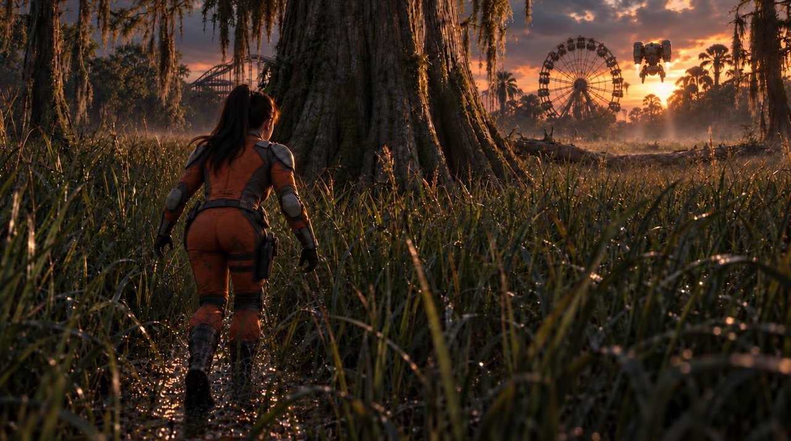
m05_02_01 START · version anchor · approved 2026-10-23
m05_02_01 END · version anchor · approved 2026-10-23
m05_02_02 — wide, 3 s¶
- Table status: boards approved (START and END); the shot as a whole is still draft. Breakdown status: EXISTING (Step 1, the lunge (option c). Second half of the take shared with m05_02_01)
- Ids: cut order 1 · was: none · run 3b label 2-01b · registry_id (run 7m): m05_02_02 · m05_ids: m05_02_02
- START frame: She moves on, fast and low and ankle-deep, toward the standing cypress as the quadruped drone settles onto the fallen trunk beyond the standing cypress, facing away from her, its green beam sweeping the open field beyond it, opposite her. — pose: (withheld)
- END frame: Pilot has lunged right, sliding flush behind the massive standing bald cypress that stands between her and the drone, while its green beam is still turned away across the far field, before it comes back round. — pose: (withheld)
- Action — breakdown (framing): value: wide: she moves fast in a shallow stoop through sawgrass half a metre high around her, ankle-deep in mud, toward the standing cypress, the sawgrass a metre high around the base of the standing cypress and a metre or more high from it all the way across to the fallen trunk, the standing cypress in the middle ground between her and the fallen trunk; the fallen trunk and the drone beyond it, farther from the camera than the cypress and to the right of it in frame; source: director (run 4): placed by me as this run's director; size: wide; composition_ruling: Leal 21 Oct: 'the trunk and drone should be beyond the tree' (master para 57: 'beyond the standing bald cypress') -- 'the tree' is the standing cypress (CONFIRMED, Leal 21 Oct)
- Action — script (master):
- STEP 1 (The Tree): As the drone settles, its green LiDAR fan comes on and sweeps the field beyond it, opposite her, nowhere near her side. (game input withheld) Action: She lunges right, dropping low as she slides flush behind the bald cypress trunk that stands between her and the drone as it touches down, the fan only now coming on and sweeping the far field. The drone is landed, legs planted on the fallen trunk.
- Camera: lens 35 mm · move static · height 1.4 m · angle: value: low behind her, near her eye line, about 1.4 m, aimed 5.0 deg down at the trunk mark; she sits in the left third, the cypress centre-left, the drone far right; source: boards; basis: boards: Leal's approved anchor boards ((withheld) / (withheld)), read into Sam's v2 previs camera (G: m05_02_02.freya-previs.v2_boards_2026-10-22.json, md5 f3f6066f); _struck: STRUCK/R-camera-from-boards-22Oct: value: slightly high, looking down at her (1.8 m to a 0.9 m target); source: record; basis: m05_02_02 project.json spec.camera position y 1.8, target y 0.9 · direction: value: toward x 1.98, z 0.71 (the trunk mark side): map bearing 282, mostly across the set and slightly toward the park (record). RULED (Leal 21 Oct (rulings on the run 4 reviews, via Soren), 1: 'use adams r4'): the staged camera stands; the canon line 'the wade camera faces away from the park' is superseded for this shot.; source: record · location: value: x 6.94, z 2.02, height 1.4 m, heading 286.6 (pitch -5.0): low behind her, as in the boards; source: boards; basis: boards: Leal's approved anchor boards ((withheld) / (withheld)), read into Sam's v2 previs camera (G: m05_02_02.freya-previs.v2_boards_2026-10-22.json, md5 f3f6066f); plan_xy_m: 6.94, 2.02; height_m: 1.4; heading_deg: 286.6; target: 0.589, 0.82, 0.128; _struck: STRUCK/R-camera-from-boards-22Oct: value: x 8.01, z 1.94, height 1.8 m: the previs camera Leal staged for m05_02_02; source: record: m05_02_02 project.json spec.camera; plan_xy_m: 8.01, 1.94; height_m: 1.8; heading_deg: 281.5
- Check against Freya, 23 Oct: current file
m05_02_02.freya-previs.combined_named_sawgrass_ui_sam_2026-10-23.json· Freya: 72 frames, camera [6.94, 1.4, 2.02] to [0.589, 0.82, 0.128], 35 mm, sun azimuth -124.6 elevation 4 · duration, lens, height, position and move agree with run 7m · sun UNCONFIRMED: run 7m's ruling puts the sun behind the park (set bearing 0); Freya's azimuth -124.6 is not that (see conflict 1) - Lighting: dusk (fall 0.3; basis: the slugline says DUSK). Light direction: sun ruling Leal 21 Oct, 5: 'the sun is setting behind the park facing scene 02'; set frame: In the Freya set frame (scene 2's only frame), the park is set bearing 0 (-z: the coaster at z -26, the Ferris wheel at z -30, record). So by the ruling the sun is at set bearing 0, behind the park.. Freya sun for this shot: azimuth -124.6, elevation 4, which is not the ruling (UNCONFIRMED, registry conflict 1). Practicals and colour: none yet.
- Set and marks: see the scene block above (frame of reference, landmarks, set placement) · shot-level set_placement: see _set_placement: cypress, fallen trunk and drone are placed by run 7, not by Freya's staged set
- Characters / cast: pilot, human_sized_drone · blocking director: unknown · description:
- pilot: Kimodo prompt: (withheld) · steps: (mark: start; t: 3; face: none)
- Motion notes: blocking duration 4 s · warnings: none · lunge_motive: value: a take-cover window: the drone has landed facing away and its beam is turned away across the far field; she lunges for the cypress before the beam comes back round; source: script para 58 (master 64a8532b); replaces: the beam crossing her path (struck in the master, STRUCK/R-beam-opposite) · hand_cut: from: 2-01; window_sec: 3, 6; boundary_frame: written by Adam, not the director; ruled: Leal 2026-10-20 via Soren: hand cut, no rerun · style_deviation: 35 mm is not one of the style's lenses (optics.preferred_focal_lengths_mm 40/50/80); kept because it is Leal's staged camera
- Dialogue / audio cues: none
- Continuity: in: Pilot opens at start mark moving fast and low through sawgrass, ankle-deep in mud; drone descends onto the fallen trunk beyond the standing cypress, facing away from her; coaster and upright Ferris wheel backlit at dusk. · out: Pilot concealed flush behind standing cypress; the cypress between her and the drone; quadruped drone on the fallen trunk beyond it, still facing away, its green beam turned away across the far field.
- Style decides (only where different from the style defaults): lens: record (Leal's staged camera, 35 mm), not the style; move: record (no camera keys: held), not the style; height: record (1.8 m), not the style; angle: record (aimed from 1.8 m at 0.9 m)
- Scene: 2
- Folders: shot folder
shots/m05_02_02/· previs foldershots/m05_02_02/previs/ - Current previs file:
shots/m05_02_02/previs/m05_02_02.freya-previs.park_models_15k_sam_2026-10-24.json(made 2026-10-24: the 15k coaster and wheel placed along the unchanged staged camera; see its .NOTE.txt) - Boards (approved): START version 7g, approved 2026-10-23 · END version 7g, approved 2026-10-23
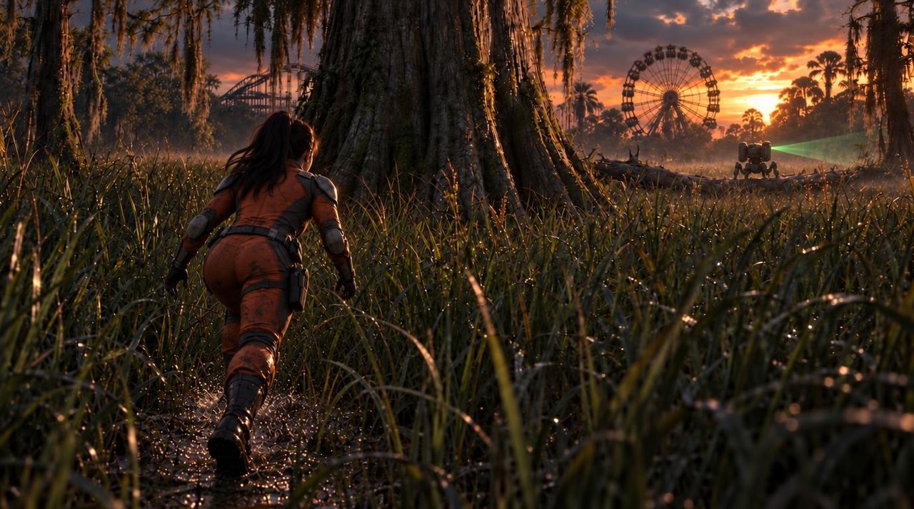
m05_02_02 START · version 7g · approved 2026-10-23
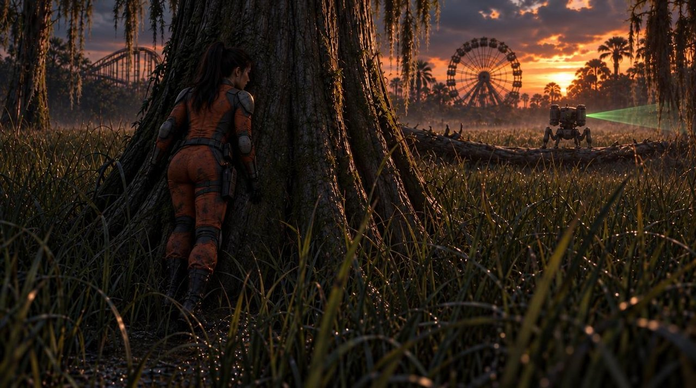
m05_02_02 END · version 7g · approved 2026-10-23
m05_02_03 — insert, 3 s¶
- Table status: boards approved (START and END); the shot as a whole is still draft. Breakdown status: EXISTING (the Turn's first shot keeps the id (Leal 21 Oct, direct: 'renumber shots for newly added shots and note the old numbers'))
- Ids: cut order 2 · was: m05_02_03 (run 4: 'the Turn, 1 of 2') · run 3b label 2-02 · registry_id (run 7m): m05_02_03 · m05_ids: m05_02_03
- START frame: Tight insert of the human-sized quadruped drone on the fallen trunk beyond the standing cypress, twin turbines vertical, at first facing away out over the far field, then pivoting about 180 degrees with a mechanical whine; its front cluster of green lenses snaps on, locking onto the standing cypress (Step 2 - The Turn). — pose: (withheld)
- END frame: The quadruped drone lowers in a hover into position, advancing to investigate the cypress (script ¶59). — pose: (withheld)
- Action — breakdown (framing): value: insert, low three-quarter: the drone's body from just above the knees up fills about half the frame height in the lower half, sky and the ruined park above and behind; feet, trunk and grass below frame; no cypress. START: its back to us from its right-rear. END: turned, front three-quarter from its right, lens cluster lit; source: Leal 22 Oct note; size: insert; basis: Adam 22 Oct, derived from Leal's note (numbers his to change): see run7m_adam.py; _struck: STRUCK/R-leal-03-closer-22Oct: value: insert, from her side of the field: the fallen trunk and the drone FAR OFF in the middle distance through the 80 mm, with NO cypress in the foreground; at the start the drone faces away from her, its back to us; at the end it has turned to face the cypress and us, lens cluster lit; source: Leal 22 Oct staging note (relayed by Soren); size: insert; _struck: STRUCK/R-leal-staging-22Oct-03-04-06:
insert: the drone on the fallen trunk fills the frame, its green lens cluster acquiring the cypresswords: On shot three, we need to bring the camera closer to the drone and tilt up onto the drone so we don't see the drone's feet, and the angle offset from the front of the drone. - Action — script (master):
- STEP 2 (The Turn): Opens tight on the drone pivoting with a mechanical whine. Its sensor array snaps green, locking onto the cypress tree. The machine lowers in a hover into position, advancing to investigate. (game input withheld) Action: Anticipating the sightline, she drops low out from the trunk, snake-crawling down and to the left, away from the drone, into dense metre-high sawgrass, sinking flat into the grass and the ankle-deep water just as the drone sweeps the tree bark.
- Camera: lens 80 mm · move static · height 1 m · angle: value: low, tilted 7.5 deg UP onto the drone so its feet and lower legs are below frame; a three-quarter view 35 deg to the drone's right of its front axis; source: Leal 22 Oct note; basis: Adam 22 Oct, derived from Leal's note (numbers his to change): see run7m_adam.py; _struck: STRUCK/R-leal-03-closer-22Oct: value: low-angle, looking up at the drone on the trunk; source: style; basis: Low chest-level and upward-tilted perspective words: On shot three, we need to bring the camera closer to the drone and tilt up onto the drone so we don't see the drone's feet, and the angle offset from the front of the drone. · direction: value: bearing 339.3: at the drone on the fallen trunk, toward the park, the sunset behind it; source: Leal 22 Oct note; basis: Adam 22 Oct, derived from Leal's note (numbers his to change): see run7m_adam.py; _struck: STRUCK/R-leal-03-closer-22Oct: value: set bearing 302.6: out past the cypress to the drone on the fallen trunk, toward the park side (the drone starts facing bearing 310.3, away, and turns to 130.3, onto the cypress and this lens); source: director (run 7): placed by me as this run's director words: On shot three, we need to bring the camera closer to the drone and tilt up onto the drone so we don't see the drone's feet, and the angle offset from the front of the drone. · location: value: 9.0 m from the drone at set (-7.89, 1.07), height 1.0 m, 35 deg to the drone's right of its front axis, looking toward the park; source: Leal 22 Oct note; basis: Adam 22 Oct, derived from Leal's note (numbers his to change): see run7m_adam.py; plan_xy_m: -7.89, 1.07; height_m: 1; heading_deg: 339.3; tilt_up_deg: 7.5; distance_to_drone_m: 9; _struck: STRUCK/R-leal-03-closer-22Oct: value: low, just past the standing cypress's right-hand edge, on her side of it, looking out at the fallen trunk; source: director (run 7): placed by me as this run's director, from _set_placement; re-derived in run 7d for the wider tree and farther drone; plan_xy_m: -0.12, -1.59; height_m: 1; heading_deg: 297.8 words: On shot three, we need to bring the camera closer to the drone and tilt up onto the drone so we don't see the drone's feet, and the angle offset from the front of the drone.
- Check against Freya, 23 Oct: current file
m05_02_03.freya-previs.camera_light_final_sam_2026-10-23.json· Freya: 72 frames, camera [-7.89, 1, 1.07] to [-11.07, 2.19, -7.35], 80 mm, sun azimuth -124.6 elevation 4 · duration, lens, height, position and move agree with run 7m · sun UNCONFIRMED: run 7m's ruling puts the sun behind the park (set bearing 0); Freya's azimuth -124.6 is not that (see conflict 1) - Lighting: dusk (fall 0.3; basis: the slugline says DUSK). Light direction: sun ruling Leal 21 Oct, 5: 'the sun is setting behind the park facing scene 02'; set frame: In the Freya set frame (scene 2's only frame), the park is set bearing 0 (-z: the coaster at z -26, the Ferris wheel at z -30, record). So by the ruling the sun is at set bearing 0, behind the park.. Freya sun for this shot: azimuth -124.6, elevation 4, which is not the ruling (UNCONFIRMED, registry conflict 1). Practicals and colour: none yet.
- Set and marks: see the scene block above (frame of reference, landmarks, set placement)
- Characters / cast: human_sized_drone · blocking director: unknown · description:
- pilot: Kimodo prompt: (withheld) · steps: (mark: start; t: 3; face: none)
- Motion notes: blocking duration 4 s · warnings: none · hand_cut: none
- Dialogue / audio cues: none
- Continuity: in: Quadruped drone on the fallen trunk beyond the cypress, facing away, pivots its sensor cluster round to the cypress; pilot remains behind the standing cypress. · out: Quadruped drone lowered in its hover, lens array locked on the standing cypress, advancing.
- Camera vs approved board (run 7m check): agrees — board: low, looking up at the drone on the trunk; record: 80 mm, 1 m, low-angle
- Style decides (only where different from the style defaults): all as the style defaults
- Scene: 2
- Folders: shot folder
shots/m05_02_03/· previs foldershots/m05_02_03/previs/ - Current previs file:
shots/m05_02_03/previs/m05_02_03.freya-previs.park_models_15k_camera_reaim_sam_2026-10-24.json(made 2026-10-24: re-aimed camera and the 15k coaster and wheel; see its .NOTE.txt) - Boards (approved): START version 7m, approved 2026-10-22 · END version 7m, approved 2026-10-22
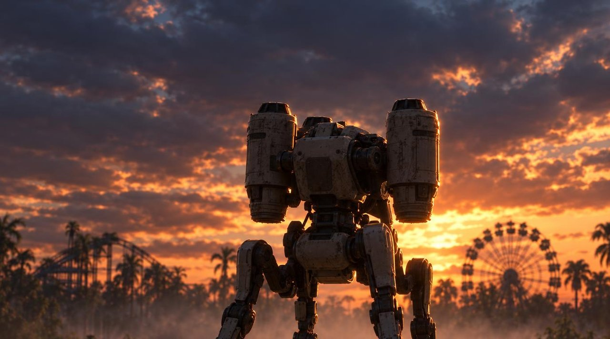
m05_02_03 START · version 7m · approved 2026-10-22
m05_02_03 END · version 7m · approved 2026-10-22
m05_02_04 — medium, 4.5 s¶
- Table status: boards approved (START and END); the shot as a whole is still draft. Breakdown status: NEW (a second camera (her drop and crawl), not a pan of the first: a new shot at its story position (Leal 21 Oct, direct: 'renumber shots for newly added shots and note the old numbers'))
- Ids: cut order 3 · was: m05_02_03 (run 4: 'the Turn, 2 of 2') · run 3b label 2-03 · registry_id (run 7m): m05_02_04 · m05_ids: m05_02_03
- START frame: Medium view behind the standing bald cypress trunk away from the sun. The pilot drops low to escape the approaching sightline as the quadruped drone's green LiDAR fan grazes the outer trunk bark (Step 2 - The Turn). — pose: (withheld)
- END frame: Pilot has snake-crawled down and left into dense metre-high sawgrass away from the trunk, flattening her torso into the shallow water bed. — pose: (withheld)
- Action — breakdown (framing): value: medium, low: the drone approaches on the RIGHT side of the standing cypress; she drops at the base of the tree and crawls away through the metre-high grass to the LEFT, away from the drone; the camera tracks left with her, so the tree ends on the right of frame; source: Leal 22 Oct staging note (relayed by Soren); size: medium; _struck: STRUCK/R-leal-staging-22Oct-03-04-06:
medium: behind the standing cypress; she drops and crawls down and left out of frame - Action — script (master):
- STEP 2 (The Turn): Opens tight on the drone pivoting with a mechanical whine. Its sensor array snaps green, locking onto the cypress tree. The machine lowers in a hover into position, advancing to investigate. (game input withheld) Action: Anticipating the sightline, she drops low out from the trunk, snake-crawling down and to the left, away from the drone, into dense metre-high sawgrass, sinking flat into the grass and the ankle-deep water just as the drone sweeps the tree bark.
- Camera: lens 50 mm · move track -0.3, 0, -0.2 · height 0.5 m · angle: value: low-angle; source: style; basis: Low chest-level and upward-tilted perspective · direction: value: set bearing 0: toward the park, across her drop and crawl from the trunk mark to crawl_end (scene 2 faces the park, ruling 5); source: director (run 5): placed by me as this run's director · location: value: 3.4 m off her crawl on the side away from the park, low (x -1.25, z 3.0), tracking left with her; source: director (run 5): placed by me as this run's director; placed from the record's trunk and crawl_end marks; plan_xy_m: -1.25, 3; height_m: 0.5; heading_deg: 0
- Check against Freya, 23 Oct: current file
m05_02_04.freya-previs.camera_track_park_cubes_board_matched_sam_2026-10-23.json· Freya: 108 frames, camera [-0.18, 0.5, 3.26] to [-0.18, 0.7, -1.74], 50 mm, sun azimuth -124.6 elevation 4 · UNCONFIRMED (conflict): camera plan position (-0.18, 3.26) vs (-1.25, 3);Freya carries a dialogue line (Not that way. Go around. at 2.305s) where run 7m has lines none(conflict 6 RESOLVED: leftover test line, removed from Freya on the next Save) · sun UNCONFIRMED: run 7m's ruling puts the sun behind the park (set bearing 0); Freya's azimuth -124.6 is not that (see conflict 1) - Lighting: dusk (fall 0.3; basis: the slugline says DUSK). Light direction: sun ruling Leal 21 Oct, 5: 'the sun is setting behind the park facing scene 02'; set frame: In the Freya set frame (scene 2's only frame), the park is set bearing 0 (-z: the coaster at z -26, the Ferris wheel at z -30, record). So by the ruling the sun is at set bearing 0, behind the park.. Freya sun for this shot: azimuth -124.6, elevation 4, which is not the ruling (UNCONFIRMED, registry conflict 1). Practicals and colour: none yet.
- Set and marks: see the scene block above (frame of reference, landmarks, set placement)
- Characters / cast: pilot · blocking director: unknown · description:
- pilot: Kimodo prompt: (withheld) · steps: (mark: start; t: 4.5; face: none) · STRUCK/R-ankle-hide-2026-10-22:
(withheld)
- pilot: Kimodo prompt: (withheld) · steps: (mark: start; t: 4.5; face: none) · STRUCK/R-ankle-hide-2026-10-22:
- Motion notes: blocking duration 5.5 s · warnings: none · hand_cut: none
- Dialogue / audio cues: none
- Continuity: in: Drone sweeps tree bark; pilot initiates low drop and leftward crawl from standing cypress. · out: Pilot prone in sawgrass and shallow water down-left from cypress; radio intact on belt.
- Camera vs approved board (run 7m check): partly — board: low and close behind her at the tree base, not 3.4 m off her crawl tracking left; height agrees (low), placement does not
- Style decides (only where different from the style defaults): move: camera_movement.movement_rule: "Measured, weighty physical tracking. No handheld float or digital whip-pans ... holding stable low-angle witness frames"
- Scene: 2
- Folders: shot folder
shots/m05_02_04/· previs foldershots/m05_02_04/previs/ - Current previs file:
shots/m05_02_04/previs/m05_02_04.freya-previs.park_models_15k_camera_reaim_sam_2026-10-24.json(made 2026-10-24: re-aimed camera and the 15k coaster and wheel; see its .NOTE.txt) - Boards (approved): START version 7j, approved 2026-10-23 · END version 7j, approved 2026-10-23
m05_02_04 START · version 7j · approved 2026-10-23
m05_02_04 END · version 7j · approved 2026-10-23
m05_02_05 — close, 4 s¶
- Table status: boards approved (START and END); the shot as a whole is still draft. Breakdown status: RENUMBERED (the hide moves up one for the new 04 (Leal 21 Oct, direct: 'renumber shots for newly added shots and note the old numbers'))
- Ids: cut order 4 · was: m05_02_04 · run 3b label 2-04a · registry_id (run 7m): m05_02_05 · m05_ids: m05_02_04
- START frame: Close view locked on pilot lying motionless beneath metre-high reeds and sawgrass. Water is ankle-deep, 0.10-0.15 m; she is 0.20-0.25m thick prone and not submerged. Swamp silt settles over her bare turned cheek. The human-sized quadruped drone hovers adjacent above the grass, its green scan line cutting harmlessly across the air above (Step 3 - Hold Still). — pose: (withheld)
- END frame: Silt has settled on her turned cheek; the drone still hovers adjacent, its sensor head clicking through the 180° sweep. — pose: (withheld)
- Action — breakdown (framing): value: close: her turned cheek in the reeds fills the lower frame, silt settling; the drone's legs above; source: director (run 4): placed by me as this run's director; size: close
- Action — script (master):
- STEP 3 (Hold Still): Camera cuts and locks back on her position at the end of Step 2. She lies motionless beneath the reeds, swamp silt settling over her turned cheek.
- The scout stops directly adjacent to her; its sensor head clicks through a wide 180-degree scan. (game input withheld) Action: She holds completely still until the tension bar drains. The drone finds no target signature, disengages, and flies off toward the west ridge.
- Camera: lens 50 mm · move static · height 0.3 m · angle: value: low-angle witness frame, ground level; source: style; basis: holding stable low-angle witness frames · direction: value: map bearing 251 (heading 251 in this scene's frame); source: director (run 4): placed by me as this run's director · location: value: 1.5 m from the settle mark, at ground level; source: director (run 4): placed by me as this run's director (relative to the record's settle mark); plan_xy_m: -2.6, -0.1; height_m: 0.3; heading_deg: 251
- Check against Freya, 23 Oct: current file
m05_02_05.freya-previs.camera_light_park_cubes_band05_colours_sam_2026-10-23.json· Freya: 96 frames, camera [-3.2, 0.3, 0.57] to [-3.81, 0.2, -0.8], 50 mm, sun azimuth -124.6 elevation 4 · UNCONFIRMED (conflict): camera plan position (-3.2, 0.57) vs (-2.6, -0.1);Freya carries a dialogue line (Not that way. Go around. at 2.305s) where run 7m has lines none(conflict 6 RESOLVED: leftover test line, removed from Freya on the next Save) · sun UNCONFIRMED: run 7m's ruling puts the sun behind the park (set bearing 0); Freya's azimuth -124.6 is not that (see conflict 1) - Lighting: dusk (fall 0.3; basis: the slugline says DUSK). Light direction: sun ruling Leal 21 Oct, 5: 'the sun is setting behind the park facing scene 02'; set frame: In the Freya set frame (scene 2's only frame), the park is set bearing 0 (-z: the coaster at z -26, the Ferris wheel at z -30, record). So by the ruling the sun is at set bearing 0, behind the park.. Freya sun for this shot: azimuth -124.6, elevation 4, which is not the ruling (UNCONFIRMED, registry conflict 1). Practicals and colour: none yet.
- Set and marks: see the scene block above (frame of reference, landmarks, set placement)
- Characters / cast: pilot, human_sized_drone · blocking director: unknown · description:
- pilot: Kimodo prompt: (withheld) · steps: (mark: start; t: 4; face: none)
- Motion notes: blocking duration 5 s · warnings: none · hand_cut: from: 2-04; window_sec: 0, 4; boundary_frame: written by Adam, not the director; ruled: Leal 2026-10-20 via Soren: hand cut, no rerun
- Dialogue / audio cues: none
- Continuity: in: Pilot prone in sawgrass concealing position; human-sized drone hovering adjacent with active green array. · out: Drone flown off toward west ridge; pilot remains prone and safe in sawgrass.
- Camera vs approved board (run 7m check): agrees — board: ground level, close on her cheek at the water; record: 50 mm, 0.3 m, ground level
- Style decides (only where different from the style defaults): angle: holding stable low-angle witness frames
- Scene: 2
- Folders: shot folder
shots/m05_02_05/· previs foldershots/m05_02_05/previs/ - Current previs file:
shots/m05_02_05/previs/m05_02_05.freya-previs.park_models_15k_camera_reaim_sam_2026-10-24.json(made 2026-10-24: re-aimed camera and the 15k coaster and wheel; see its .NOTE.txt) - Boards (approved): START version 7g, approved 2026-10-23 · END version 7g, approved 2026-10-23
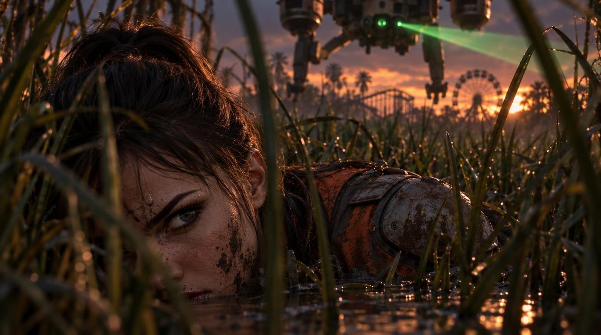
m05_02_05 START · version 7g · approved 2026-10-23
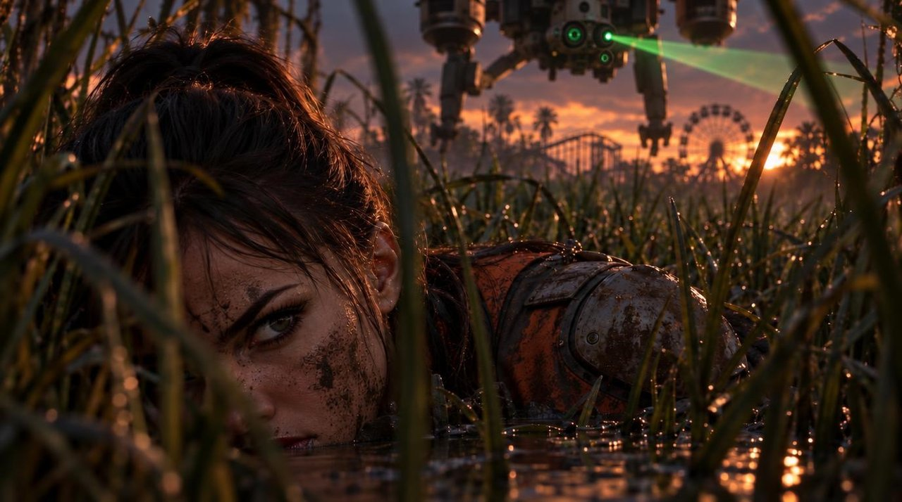
m05_02_05 END · version 7g · approved 2026-10-23
m05_02_06 — close, 3 s¶
- Table status: boards approved (START and END); the shot as a whole is still draft. Breakdown status: RENUMBERED (the payoff and flyoff moves up one for the new 04 (Leal 21 Oct, direct: 'renumber shots for newly added shots and note the old numbers'))
- Ids: cut order 5 · was: m05_02_05 · run 3b label 2-04b · registry_id (run 7m): m05_02_06 · m05_ids: m05_02_05
- START frame: Silt has settled on her turned cheek; the drone still hovers adjacent, its sensor head clicking through the 180° sweep. — pose: (withheld)
- END frame: The green LiDAR beam deactivates. The human-sized quadruped drone tilts its side turbines forward (art-derived: art/concept/drone_final/drone_hover_final.jpg, not in the script) and flies off toward the west ridge, leaving the hollow quiet as pilot remains still. — pose: (withheld)
- Action — breakdown (framing): value: close, ground level: she lies PRONE, low, her cheek near the water, her body running off to the left through the grass; the standing cypress on the RIGHT of frame, wide, its trunk filling about the right quarter; the drone above, then leaving; source: Leal 22 Oct staging note (relayed by Soren); size: close; _struck: STRUCK/R-leal-staging-22Oct-03-04-06:
close: her turned cheek in the reeds fills the lower frame, silt settling; the drone's legs above - Action — script (master):
- The scout stops directly adjacent to her; its sensor head clicks through a wide 180-degree scan. (game input withheld) Action: She holds completely still until the tension bar drains. The drone finds no target signature, disengages, and flies off toward the west ridge.
- Camera: lens 50 mm · move static · height 0.3 m · angle: value: low-angle witness frame, ground level; source: style; basis: holding stable low-angle witness frames · direction: value: map bearing 251 (heading 251 in this scene's frame); source: director (run 4): placed by me as this run's director · location: value: 1.5 m from the settle mark, at ground level; source: director (run 4): placed by me as this run's director (relative to the record's settle mark); plan_xy_m: -2.6, -0.1; height_m: 0.3; heading_deg: 251
- Check against Freya, 23 Oct: no Freya previs file exists for this shot. Camera, set and light fields are UNCONFIRMED (run 7m only).
- Lighting: dusk (fall 0.3; basis: the slugline says DUSK). Light direction: sun ruling Leal 21 Oct, 5: 'the sun is setting behind the park facing scene 02'; set frame: In the Freya set frame (scene 2's only frame), the park is set bearing 0 (-z: the coaster at z -26, the Ferris wheel at z -30, record). So by the ruling the sun is at set bearing 0, behind the park.. Freya sun: none yet (no Freya file for this shot). Practicals and colour: none yet.
- Set and marks: see the scene block above (frame of reference, landmarks, set placement)
- Characters / cast: pilot, human_sized_drone · blocking director: unknown · description:
- pilot: Kimodo prompt: (withheld) · steps: (mark: start; t: 3; face: none)
- Motion notes: blocking duration 4 s · warnings: none · hand_cut: from: 2-04; window_sec: 4, 7; boundary_frame: written by Adam, not the director; ruled: Leal 2026-10-20 via Soren: hand cut, no rerun
- Dialogue / audio cues: none
- Continuity: in: Pilot prone in sawgrass concealing position; human-sized drone hovering adjacent with active green array. · out: Drone flown off toward west ridge; pilot remains prone and safe in sawgrass.
- Camera vs approved board (run 7m check): does not — board: she is raised and framed as a portrait at about her head height; record: ground level, 1.5 m, the same view as 05. The BOARD is the miss here, not the record
- Style decides (only where different from the style defaults): angle: holding stable low-angle witness frames
- Scene: 2
- Folders: shot folder
shots/m05_02_06/· previs foldershots/m05_02_06/previs/ - Current previs file:
shots/m05_02_06/previs/m05_02_06.freya-previs.park_models_15k_camera_reaim_sam_2026-10-24.json(made 2026-10-24; the shot’s first main, m05_02_06.freya-previs.json, is a starting copy from 02_05 and NOT approved work; see the version’s .NOTE.txt) - Boards (approved): START version 7j, approved 2026-10-23 · END version 7j, approved 2026-10-23
m05_02_06 START · version 7j · approved 2026-10-23
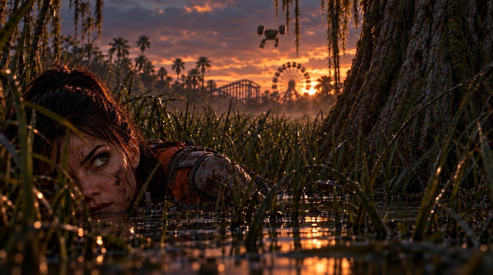
m05_02_06 END · version 7j · approved 2026-10-23
Scene 3 — EXT. TRANSPORT IMPACT SITE - CONTINUOUS¶
- Scene: EXT. TRANSPORT IMPACT SITE - CONTINUOUS · location: TRANSPORT IMPACT SITE · light: id: 3; fall: 0.3; band: dusk; basis: CONTINUOUS, so it inherits dusk from scene 2 · time in heading: CONTINUOUS (superseded: no) · 4 shots, 32 s (run 7m scene total 32) · director adam, format freya-stage-director/1
- Frame of reference: Compass, metres. Origin: the ejection seat. UP is north. The drag furrows run north into the water (¶67, ¶84).
- Set and marks (run 7m frame): reference: Compass, metres. Origin: the ejection seat. UP is north. The drag furrows run north into the water (¶67, ¶84). · source: script ¶67, ¶84 · path: (-8, -10) ; (-2, -3) · landmarks: (ejection seat, 0, 0, script ¶67) ; (drag furrows, north into the water, 0, 8, script ¶67, ¶84) ; (debris field, -5, -4, script ¶64)
- Continuity breaks between shots: none · gaps: none · provisional: none · (withheld: quotes the script) · coverage: action_paragraphs: 12; shots: 4; ungrounded_paragraphs: 0
- Duration vs beat-sheet budget (run 7m gate): budget: 36; run: 26; off: -10; source: 2a 36
m05_03_01 — wide, 8 s¶
- Table status: draft (run 7m); no approved board yet. Breakdown status: EXISTING (registry 01-03)
- Ids: cut order 0 · was: none · run 3b label 3-01 · registry_id (run 7m): m05_03_01
- START frame: Low wide as the Captain reaches the impact clearing: no fuselage, only shattered carbon hulls, severed conduits and scorched ribs smouldering in the shallow mud, thin grey plumes rising into the canopy. — pose: (withheld)
- END frame: She has stopped among the smoking debris, empty-handed, scanning the blast zone. — pose: (withheld)
- Action — breakdown (framing): value: wide: the obliterated transport across the frame, she stops small in the debris, grey plumes rising; source: director (run 4): placed by me as this run's director; size: wide
- Camera: lens 40 mm · move track 0, 0, 0.4 · height 1.1 m · angle: value: low chest-level, tilted up; source: style; basis: Low chest-level and upward-tilted perspective · direction: value: north-east (heading 45 in this scene's frame); source: director (run 4): placed by me as this run's director · location: value: at the south-west edge of the clearing, where she enters; source: director (run 4): placed by me as this run's director; plan_xy_m: -14, -14; height_m: 1.1; heading_deg: 45
- Check against Freya, 23 Oct: not re-checked (outside the scene 2 check); fields are run 7m values, UNCONFIRMED against current files.
- Lighting: dusk (fall 0.3; basis: CONTINUOUS, so it inherits dusk from scene 2). Light direction, key, practicals and colour: none yet in the breakdown (the master script’s own light wording for the moment is in Action — script).
- Set and marks: see the scene block above (frame of reference, landmarks, set placement)
- Characters / cast: pilot · blocking director: unknown · description:
- pilot: Kimodo prompt: (withheld) · steps: (mark: start; t: 8; face: none)
- Motion notes: blocking duration 9 s · warnings: none
- Dialogue / audio cues: none
- Continuity: in: Low wide as the Captain reaches the impact clearing: no fuselage, only shattered carbon hulls, severed conduits and scorched ribs smouldering in the shallow mud, thin grey plumes rising into the canopy. · out: She has stopped among the smoking debris, empty-handed, scanning the blast zone.
- Style decides (only where different from the style defaults): move: camera_movement.movement_rule: "Measured, weighty physical tracking. No handheld float or digital whip-pans ... holding stable low-angle witness frames"
- Scene: 3
- Folders: shot folder
shots/m05_03_01/· previs folder: none yet (noprevis/under the shot folder) - Current previs file: none
- Boards (approved): START: no approved board · END: no approved board
m05_03_02 — insert, 8 s¶
- Table status: draft (run 7m); no approved board yet. Breakdown status: EXISTING (registry 01-03)
- Ids: cut order 1 · was: none · run 3b label 3-02 · registry_id (run 7m): m05_03_02
- START frame: One frame holds it: in the foreground an empty ejection seat canted at the edge of the wreckage, its harness RIPPED THROUGH, the buckle still latched. — pose: (withheld)
- END frame: Behind the seat, falling away out of focus, several sets of long parallel drag furrows pressed deep into the silt, heading north into the water. — pose: (withheld)
- Action — breakdown (framing): value: insert: the seat and its latched buckle in the foreground, the furrows receding out of focus behind; source: director (run 4): placed by me as this run's director; size: insert
- Camera: lens 50 mm · move static · height 0.5 m · angle: value: low, ground-level witness frame; source: style; basis: holding stable low-angle witness frames · direction: value: north, along the furrows (script ¶67: 'Behind it ... heading north'); source: script · location: value: 1.2 m south of the seat, low; source: script ¶67 places it: the seat in the foreground with the furrows falling away behind it, north; plan_xy_m: 0, -1.2; height_m: 0.5; heading_deg: 0
- Check against Freya, 23 Oct: not re-checked (outside the scene 2 check); fields are run 7m values, UNCONFIRMED against current files.
- Lighting: dusk (fall 0.3; basis: CONTINUOUS, so it inherits dusk from scene 2). Light direction, key, practicals and colour: none yet in the breakdown (the master script’s own light wording for the moment is in Action — script).
- Set and marks: see the scene block above (frame of reference, landmarks, set placement)
- Characters / cast: pilot, ejection_seat · blocking director: unknown · description:
- pilot: Kimodo prompt: (withheld) · steps: (mark: start; t: 8; face: none)
- Motion notes: blocking duration 9 s · warnings: none
- Dialogue / audio cues: (withheld: quotes the script)
- Continuity: in: One frame holds it: in the foreground an empty ejection seat canted at the edge of the wreckage, its harness RIPPED THROUGH, the buckle still latched. · out: Behind the seat, falling away out of focus, several sets of long parallel drag furrows pressed deep into the silt, heading north into the water.
- Style decides (only where different from the style defaults): angle: holding stable low-angle witness frames
- Scene: 3
- Folders: shot folder
shots/m05_03_02/· previs folder: none yet (noprevis/under the shot folder) - Current previs file: none
- Boards (approved): START: no approved board · END: no approved board
m05_03_03 — medium, 6 s¶
- Table status: draft (run 7m); no approved board yet. Breakdown status: NEW (board b06 as its own shot, cut between the seat insert and the close (Leal 21 Oct: 'lets go with your recommendation'; registry, Scene 3 line))
- Ids: cut order 2 · was: none · run 3b label 3-b06 · registry_id (run 7m): m05_03_03
- START frame: From behind her, over her left shoulder: the Captain stands still at the edge of the wreckage, the overturned ejection seat on its side in the silt to her right, and several sets of long parallel drag furrows running away from it north across the mud, into the sawgrass and the water, the coaster's loop dim beyond the trees. — pose: (withheld)
- END frame: She has not moved. The furrows run on north into the water and the sawgrass; no bodies, not one. — pose: (withheld)
- Action — breakdown (framing): value: medium: her back and left shoulder left of frame, the overturned seat right, the furrows running away north to the sawgrass and the coaster beyond; source: board b06 (2a_r2_b06_v4_trough_CURRENT.jpg); size: medium
- Camera: lens 40 mm · move static · height 1.5 m · angle: value: near eye level, a little above her shoulder; source: canon; basis: canon art: board b06 · direction: value: north, along the furrows, with her in the left foreground and the seat to her right; source: board b06 · location: value: about 2.5 m behind her and a little to her left, at eye level; source: board b06 places it (her back, left foreground); plan position derived from m05_03_04's 'her' at (-2, -3.0); plan_xy_m: -3, -5.3; height_m: 1.5; heading_deg: 15 · camera.angle (differs): value: near eye level, a little above her shoulder; source: canon; basis: canon art: board b06 (2a_r2_b06_v4_trough_CURRENT.jpg)
- Check against Freya, 23 Oct: not re-checked (outside the scene 2 check); fields are run 7m values, UNCONFIRMED against current files.
- Lighting: dusk (fall 0.3; basis: CONTINUOUS, so it inherits dusk from scene 2). Light direction, key, practicals and colour: none yet in the breakdown (the master script’s own light wording for the moment is in Action — script).
- Set and marks: see the scene block above (frame of reference, landmarks, set placement)
- Characters / cast: pilot · blocking director: unknown · description:
- pilot: Kimodo prompt: (withheld) · steps: (mark: start; t: 6; face: none)
- Motion notes: blocking duration 6 s · warnings: none
- Dialogue / audio cues: none · script paragraphs: value: 67, 68; basis: para 67 'long parallel drag furrows ... Heading north, into the water' and para 68 'No bodies. Not one.'
- Continuity: in: The seat insert's furrows, now seen whole: she stands at the wreck's edge looking north along them. · out: She stands still, looking north along the furrows into the water; the radio on her belt at her left hip.
- Style decides (only where different from the style defaults): angle: holding stable low-angle witness frames
- Scene: 3
- Folders: shot folder
shots/m05_03_03/· previs folder: none yet (noprevis/under the shot folder) - Current previs file: none
- Boards (approved): START: no approved board · END: no approved board
m05_03_04 — close, 10 s¶
- Table status: draft (run 7m); no approved board yet. Breakdown status: RENUMBERED (moves up one for the new b06 shot (Leal 21 Oct, direct: 'renumber shots for newly added shots and note the old numbers'))
- Ids: cut order 3 · was: m05_03_03 · run 3b label 3-03 · registry_id (run 7m): m05_03_04
- START frame: Low close on the Captain, not moving, holding on the drag marks running north into the water. — pose: (withheld)
- END frame: She looks along the furrows, then down at the radio on her belt at her left hip, where the artifact sits on bearing 040, and says nothing about it. — pose: (withheld)
- Action — breakdown (framing): value: close: her face centre frame, eyes along the furrows, then down to the radio at her left hip; source: director (run 4): placed by me as this run's director; size: close
- Camera: lens 80 mm · move static · height 1.2 m · angle: value: low chest-level, tilted up; source: style; basis: Low chest-level and upward-tilted perspective · direction: value: south, back at her face as she looks north; source: director (run 4): placed by me as this run's director · location: value: 3.5 m north of her, between her and the furrows; source: script ¶83-¶85: she looks north along the furrows, so a camera on her face sits north of her; plan_xy_m: -2, 0.5; height_m: 1.2; heading_deg: 180
- Check against Freya, 23 Oct: not re-checked (outside the scene 2 check); fields are run 7m values, UNCONFIRMED against current files.
- Lighting: dusk (fall 0.3; basis: CONTINUOUS, so it inherits dusk from scene 2). Light direction, key, practicals and colour: none yet in the breakdown (the master script’s own light wording for the moment is in Action — script).
- Set and marks: see the scene block above (frame of reference, landmarks, set placement)
- Characters / cast: pilot · blocking director: unknown · description:
- pilot: Kimodo prompt: (withheld) · steps: (mark: start; t: 10; face: none)
- Motion notes: blocking duration 10 s · warnings: The shot would run 11.0 s; Kimodo makes at most 10 s, so it is 10 s.
- Dialogue / audio cues: (withheld: quotes the script)
- Continuity: in: Low close on the Captain, not moving, holding on the drag marks running north into the water. · out: She looks along the furrows, then down at the radio on her belt at her left hip, where the artifact sits on bearing 040, and says nothing about it.
- Style decides (only where different from the style defaults): all as the style defaults
- Scene: 3
- Folders: shot folder
shots/m05_03_04/· previs folder: none yet (noprevis/under the shot folder) - Current previs file: none
- Boards (approved): START: no approved board · END: no approved board
Scene 4 — EXT. RUINED PARK - THE HOLLOW - NIGHT¶
- Scene: EXT. RUINED PARK - THE HOLLOW - NIGHT · location: RUINED PARK · light: id: 4; fall: 1; band: night; basis: the slugline says NIGHT · time in heading: NIGHT (superseded: no) · 14 shots, 123 s (run 7m scene total 123) · director adam, format freya-stage-director/1
- Frame of reference: Compass, metres. Origin: the artifact. UP is north. She approaches on bearing 040 (the artifact's bearing, ¶85 / ¶45): she comes in from the south-west.
- Set and marks (run 7m frame): reference: Compass, metres. Origin: the artifact. UP is north. She approaches on bearing 040 (the artifact's bearing, ¶85 / ¶45): she comes in from the south-west. · source: script ¶85 (artifact on bearing 040), ¶100-¶107 · path: (-25, -30) ; (-10, -12) ; (-6.4, -7.7) ; (-0.6, -0.7) · landmarks: (artifact (four drums, on its side), 0, 0, script ¶102-¶103) ; (transport case in its gouge, -10, -12, script ¶100-¶101; distance director) ; (frogs, thickest close in, 1.2, 0.4, script ¶113)
- Continuity breaks between shots: (cut: m05_04_01 -> m05_04_02; leaves: Ahead the ground gives way into a shallow hollow; the radio at her belt breaks up into electromagnetic hash.; enters: Low medium tracking past the transport case lying in a long gouge of torn mud, its composite shell split from the inside out, the lid torn back on one hinge, the webbing snapped.; note: the two sides of this cut name nothing in common) ; (cut: m05_04_03 -> m05_04_04; leaves: She has crossed the last ten metres slowly, past the frogs without looking at them, and gone down on her knees over it without touching it.; enters: Low close on the kneeling Captain as she reaches out toward the stone and stops, the wind gusting harder, sawgrass bending flat around the hollow.; note: the two sides of this cut name nothing in common) ; (cut: m05_04_06 -> m05_04_07; leaves: She has breathed out, slow, all the way out, and holds still, listening.; enters: Low medium as she gets her gloved hand under the stack too and lifts, braced for fifty pounds; one drum turns under its own weight.; note: the two sides of this cut name nothing in common) ; (cut: m05_04_09 -> m05_04_10; leaves: Her eyes stay on the stone as Seth says the team made bare contact.; enters: The same low close: her face hardens at 'fatalities'.; note: the two sides of this cut name nothing in common) ; (cut: m05_04_10 -> m05_04_11; leaves: She stares at the stone: 'There were voices in this rock, Seth.'; enters: Low frame from behind the inert stack in the foreground mud, the Captain framed beyond it in the water.; note: the two sides of this cut name nothing in common) ; (cut: m05_04_12 -> m05_04_13; leaves: She holds on him through the silence after 'atmospheric'.; enters: Low medium on the Captain alone in the hollow: 'It wasn't atmospheric.'; note: the two sides of this cut name nothing in common) · gaps: none · provisional: none · (withheld: quotes the script) · coverage: action_paragraphs: 60; shots: 14; ungrounded_paragraphs: 0
- Duration vs beat-sheet budget (run 7m gate): not flagged (scene 4's budget is ruled)
- Budget ruling (run 7m
_budget): Leal 21 Oct, 6: 'lets update the budget to replace the canon budget' -- scene 4 budget is run 4's 123 s with the exchange at 55 s
m05_04_01 — wide, 10 s¶
- Table status: draft (run 7m); no approved board yet. Breakdown status: EXISTING (registry, option B (Leal 21 Oct))
- Ids: cut order 0 · was: none · run 3b label 4-01 · registry_id (run 7m): m05_04_01
- START frame: Low wide on the Captain wading quickly through the sawgrass as a real wind kicks up through the cypress, moss swinging, ripples running across the black water. — pose: (withheld)
- END frame: Ahead the ground gives way into a shallow hollow; the radio at her belt breaks up into electromagnetic hash. — pose: (withheld)
- Action — breakdown (framing): value: wide: she wades away from the lens through the sawgrass, the grove moving in the wind; source: director (run 4): placed by me as this run's director; size: wide
- Camera: lens 40 mm · move track 0, 0, 0.8 · height 1.1 m · angle: value: low chest-level, tilted up; source: style; basis: Low chest-level and upward-tilted perspective · direction: value: north-east (heading 40 in this scene's frame); source: director (run 4): placed by me as this run's director · location: value: behind her at the edge of the cypress grove; source: director (run 4): placed by me as this run's director; plan_xy_m: -31, -38; height_m: 1.1; heading_deg: 40
- Check against Freya, 23 Oct: not re-checked (outside the scene 2 check); fields are run 7m values, UNCONFIRMED against current files.
- Lighting: night (fall 1; basis: the slugline says NIGHT). Light direction, key, practicals and colour: none yet in the breakdown (the master script’s own light wording for the moment is in Action — script).
- Set and marks: see the scene block above (frame of reference, landmarks, set placement)
- Characters / cast: pilot · blocking director: unknown · description:
- pilot: Kimodo prompt: (withheld) · steps: (mark: start; t: 10; face: none)
- Motion notes: blocking duration 10 s · warnings: The shot would run 11.0 s; Kimodo makes at most 10 s, so it is 10 s.
- Dialogue / audio cues: (speaker: SETH (V.O.); parenthetical: none; text: The hold breached before impact. The case broke away on entry—it's a hundred meters ahead of you. I can see the marker.; script_para: 93; placement: placed by the director; part of the line, which continues across the cut; verbatim: SETH (V.O.): "The hold breached before impact. The case broke away on entry—it's a hundred meters ahead of you. I can see the marker.")
- Continuity: in: Low wide on the Captain wading quickly through the sawgrass as a real wind kicks up through the cypress, moss swinging, ripples running across the black water. · out: Ahead the ground gives way into a shallow hollow; the radio at her belt breaks up into electromagnetic hash.
- Style decides (only where different from the style defaults): move: camera_movement.movement_rule: "Measured, weighty physical tracking. No handheld float or digital whip-pans ... holding stable low-angle witness frames"
- Scene: 4
- Folders: shot folder
shots/m05_04_01/· previs folder: none yet (noprevis/under the shot folder) - Current previs file: none
- Boards (approved): START: no approved board · END: no approved board
m05_04_02 — medium, 9 s¶
- Table status: draft (run 7m); no approved board yet. Breakdown status: EXISTING (registry, option B (Leal 21 Oct))
- Ids: cut order 1 · was: none · run 3b label 4-02 · registry_id (run 7m): m05_04_02
- START frame: Low medium tracking past the transport case lying in a long gouge of torn mud, its composite shell split from the inside out, the lid torn back on one hinge, the webbing snapped. — pose: (withheld)
- END frame: She walks past it without slowing; the radio cuts to dead static. — pose: (withheld)
- Action — breakdown (framing): value: medium: the split transport case foreground right, she walks past it left to right; source: director (run 4): placed by me as this run's director; size: medium
- Camera: lens 40 mm · move track 0.4, 0, 0.2 · height 1 m · angle: value: low-angle; source: style; basis: Low chest-level and upward-tilted perspective · direction: value: south-east (heading 130 in this scene's frame); source: director (run 4): placed by me as this run's director · location: value: beside the gouge, low; source: director (run 4): placed by me as this run's director; plan_xy_m: -13, -10; height_m: 1; heading_deg: 130
- Check against Freya, 23 Oct: not re-checked (outside the scene 2 check); fields are run 7m values, UNCONFIRMED against current files.
- Lighting: night (fall 1; basis: the slugline says NIGHT). Light direction, key, practicals and colour: none yet in the breakdown (the master script’s own light wording for the moment is in Action — script).
- Set and marks: see the scene block above (frame of reference, landmarks, set placement)
- Characters / cast: pilot, transport_case · blocking director: unknown · description:
- pilot: Kimodo prompt: (withheld) · steps: (mark: start; t: 9; face: none)
- Motion notes: blocking duration 10 s · warnings: none
- Dialogue / audio cues: (withheld: quotes the script)
- Continuity: in: Low medium tracking past the transport case lying in a long gouge of torn mud, its composite shell split from the inside out, the lid torn back on one hinge, the webbing snapped. · out: She walks past it without slowing; the radio cuts to dead static.
- Style decides (only where different from the style defaults): move: camera_movement.movement_rule: "Measured, weighty physical tracking. No handheld float or digital whip-pans ... holding stable low-angle witness frames"
- Scene: 4
- Folders: shot folder
shots/m05_04_02/· previs folder: none yet (noprevis/under the shot folder) - Current previs file: none
- Boards (approved): START: no approved board · END: no approved board
m05_04_03 — wide, 9 s¶
- Table status: draft (run 7m); no approved board yet. Breakdown status: EXISTING (registry, option B (Leal 21 Oct))
- Ids: cut order 2 · was: none · run 3b label 4-03 · registry_id (run 7m): m05_04_03
- START frame: Low wide across the hollow: beyond the wreck the artifact lies on its side in the silt, four dark basalt drums out of register on one axis, the air over it wavering; frogs lie dead around it, thickest close in. — pose: (withheld)
- END frame: She has crossed the last ten metres slowly, past the frogs without looking at them, and gone down on her knees over it without touching it. — pose: (withheld)
- Action — breakdown (framing): value: wide: the artifact in the foreground mud, the frogs around it, she crosses the last ten metres and kneels behind it; source: director (run 4): placed by me as this run's director; size: wide
- Camera: lens 50 mm · move track 0, 0, 0.3 · height 0.6 m · angle: value: low-angle witness frame; source: style; basis: holding stable low-angle witness frames · direction: value: south-west (heading 225 in this scene's frame); source: director (run 4): placed by me as this run's director · location: value: beyond the artifact, facing her as she comes in; source: director (run 4): placed by me as this run's director; plan_xy_m: 2.5, 2.5; height_m: 0.6; heading_deg: 225
- Check against Freya, 23 Oct: not re-checked (outside the scene 2 check); fields are run 7m values, UNCONFIRMED against current files.
- Lighting: night (fall 1; basis: the slugline says NIGHT). Light direction, key, practicals and colour: none yet in the breakdown (the master script’s own light wording for the moment is in Action — script).
- Set and marks: see the scene block above (frame of reference, landmarks, set placement)
- Characters / cast: pilot, artifact · blocking director: unknown · description:
- pilot: Kimodo prompt: (withheld) · steps: (mark: start; t: 9; face: none)
- Motion notes: blocking duration 10 s · warnings: none
- Dialogue / audio cues: none
- Continuity: in: Low wide across the hollow: beyond the wreck the artifact lies on its side in the silt, four dark basalt drums out of register on one axis, the air over it wavering; frogs lie dead around it, thickest close in. · out: She has crossed the last ten metres slowly, past the frogs without looking at them, and gone down on her knees over it without touching it.
- Style decides (only where different from the style defaults): move: camera_movement.movement_rule: "Measured, weighty physical tracking. No handheld float or digital whip-pans ... holding stable low-angle witness frames"; angle: holding stable low-angle witness frames
- Scene: 4
- Folders: shot folder
shots/m05_04_03/· previs folder: none yet (noprevis/under the shot folder) - Current previs file: none
- Boards (approved): START: no approved board · END: no approved board
m05_04_04 — close, 9 s¶
- Table status: draft (run 7m); no approved board yet. Breakdown status: EXISTING (registry, option B (Leal 21 Oct))
- Ids: cut order 3 · was: none · run 3b label 4-04 · registry_id (run 7m): m05_04_04
- START frame: Low close on the kneeling Captain as she reaches out toward the stone and stops, the wind gusting harder, sawgrass bending flat around the hollow. — pose: (withheld)
- END frame: Both hands have worked the glove off her right hand; she tucks it through her belt at the right hip, and the scorched yellow ribbon comes out knotted at her wrist. — pose: (withheld)
- Action — breakdown (framing): value: close: her hands working the glove free, the ribbon at the wrist; her face top of frame; source: director (run 4): placed by me as this run's director; size: close
- Camera: lens 80 mm · move static · height 0.7 m · angle: value: low-angle; source: style; basis: Low chest-level and upward-tilted perspective · direction: value: east-north-east (heading 70 in this scene's frame); source: director (run 4): placed by me as this run's director · location: value: 1 m off her left, at kneeling height; source: director (run 4): placed by me as this run's director; plan_xy_m: -1.6, -0.2; height_m: 0.7; heading_deg: 70
- Check against Freya, 23 Oct: not re-checked (outside the scene 2 check); fields are run 7m values, UNCONFIRMED against current files.
- Lighting: night (fall 1; basis: the slugline says NIGHT). Light direction, key, practicals and colour: none yet in the breakdown (the master script’s own light wording for the moment is in Action — script).
- Set and marks: see the scene block above (frame of reference, landmarks, set placement)
- Characters / cast: pilot · blocking director: unknown · description:
- pilot: Kimodo prompt: (withheld) · steps: (mark: start; t: 9; face: none)
- Motion notes: blocking duration 10 s · warnings: none
- Dialogue / audio cues: (withheld: quotes the script)
- Continuity: in: Low close on the kneeling Captain as she reaches out toward the stone and stops, the wind gusting harder, sawgrass bending flat around the hollow. · out: Both hands have worked the glove off her right hand; she tucks it through her belt at the right hip, and the scorched yellow ribbon comes out knotted at her wrist.
- Style decides (only where different from the style defaults): all as the style defaults
- Scene: 4
- Folders: shot folder
shots/m05_04_04/· previs foldershots/m05_04_04/previs/(holds only a MOVED pointer for beat2b_r7_boardC and a READ_ME_FIRST.txt; no previs file, so no current previs) - Current previs file: none
- Boards (approved): START: no approved board · END: no approved board
m05_04_05 — insert, 6 s¶
- Table status: draft (run 7m); no approved board yet. Breakdown status: EXISTING (registry, option B (Leal 21 Oct))
- Ids: cut order 4 · was: none · run 3b label 4-05 · registry_id (run 7m): m05_04_05
- START frame: Tight on her bare hand above the basalt, the ribbon at her wrist, nothing else in frame; the air over the stone swims. — pose: (withheld)
- END frame: Her wet palm lies along the worn flank; the air snaps still, the incisions sharp, and the letters come up dull red to orange inside the grooves only. — pose: (withheld)
- Action — breakdown (framing): value: insert: her bare hand and the basalt drum only; nothing else in frame (script); source: script; size: insert
- Camera: lens 80 mm · move static · height 0.5 m · angle: value: looking down at the hand on the stone; source: anchor; basis: Tight on her bare hand above the basalt · direction: value: down onto the stone; source: director (run 4): placed by me as this run's director · location: value: over the stone, close; source: script ¶132: 'tight on her hand and the basalt, the ribbon at her wrist, nothing else in frame'; plan_xy_m: -0.6, 0; height_m: 0.5; heading_deg: 90
- Check against Freya, 23 Oct: not re-checked (outside the scene 2 check); fields are run 7m values, UNCONFIRMED against current files.
- Lighting: night (fall 1; basis: the slugline says NIGHT). Light direction, key, practicals and colour: none yet in the breakdown (the master script’s own light wording for the moment is in Action — script).
- Set and marks: see the scene block above (frame of reference, landmarks, set placement)
- Characters / cast: pilot, artifact · blocking director: unknown · description:
- pilot: Kimodo prompt: (withheld) · steps: (mark: start; t: 6; face: none)
- Motion notes: blocking duration 7 s · warnings: none
- Dialogue / audio cues: none
- Continuity: in: Tight on her bare hand above the basalt, the ribbon at her wrist, nothing else in frame; the air over the stone swims. · out: Her wet palm lies along the worn flank; the air snaps still, the incisions sharp, and the letters come up dull red to orange inside the grooves only.
- Style decides (only where different from the style defaults): angle: anchor: Tight on her bare hand above the basalt
- Scene: 4
- Folders: shot folder
shots/m05_04_05/· previs folder: none yet (noprevis/under the shot folder) - Current previs file: none
- Boards (approved): START: no approved board · END: no approved board
m05_04_06 — close, 7 s¶
- Table status: draft (run 7m); no approved board yet. Breakdown status: EXISTING (registry, option B (Leal 21 Oct))
- Ids: cut order 5 · was: none · run 3b label 4-06 · registry_id (run 7m): m05_04_06
- START frame: Low close on her face, her bare hand still on the stone in frame with her, eyes down on the artifact. — pose: (withheld)
- END frame: She has breathed out, slow, all the way out, and holds still, listening. — pose: (withheld)
- Action — breakdown (framing): value: close: her face, her bare hand still on the stone in frame with her (script ¶134); source: script; size: close
- Camera: lens 50 mm · move static · height 0.6 m · angle: value: low-angle, tilted up to her face; source: style; basis: Low chest-level and upward-tilted perspective · direction: value: south-west (heading 230 in this scene's frame); source: director (run 4): placed by me as this run's director · location: value: across the stone from her, low; source: director (run 4): placed by me as this run's director; plan_xy_m: 0.5, 0.2; height_m: 0.6; heading_deg: 230
- Check against Freya, 23 Oct: not re-checked (outside the scene 2 check); fields are run 7m values, UNCONFIRMED against current files.
- Lighting: night (fall 1; basis: the slugline says NIGHT). Light direction, key, practicals and colour: none yet in the breakdown (the master script’s own light wording for the moment is in Action — script).
- Set and marks: see the scene block above (frame of reference, landmarks, set placement)
- Characters / cast: pilot, artifact · blocking director: unknown · description:
- pilot: Kimodo prompt: (withheld) · steps: (mark: start; t: 7; face: none)
- Motion notes: blocking duration 8 s · warnings: none
- Dialogue / audio cues: none
- Continuity: in: Low close on her face, her bare hand still on the stone in frame with her, eyes down on the artifact. · out: She has breathed out, slow, all the way out, and holds still, listening.
- Style decides (only where different from the style defaults): all as the style defaults
- Scene: 4
- Folders: shot folder
shots/m05_04_06/· previs folder: none yet (noprevis/under the shot folder) - Current previs file: none
- Boards (approved): START: no approved board · END: no approved board
m05_04_07 — medium, 8 s¶
- Table status: draft (run 7m); no approved board yet. Breakdown status: EXISTING (registry, option B (Leal 21 Oct))
- Ids: cut order 6 · was: none · run 3b label 4-07 · registry_id (run 7m): m05_04_07
- START frame: Low medium as she gets her gloved hand under the stack too and lifts, braced for fifty pounds; one drum turns under its own weight. — pose: (withheld)
- END frame: It came up like nothing; she rocks back on her heels, jolts, gasps and drops the stone back into the mud with a wet slap. — pose: (withheld)
- Action — breakdown (framing): value: medium: kneeling figure and stone; she lifts, rocks back and drops it; source: director (run 4): placed by me as this run's director; size: medium
- Camera: lens 40 mm · move static · height 0.8 m · angle: value: low-angle witness frame; source: style; basis: holding stable low-angle witness frames · direction: value: south-west (heading 230 in this scene's frame); source: director (run 4): placed by me as this run's director · location: value: across the stone from her, further back; source: director (run 4): placed by me as this run's director; plan_xy_m: 1.5, 1.2; height_m: 0.8; heading_deg: 230
- Check against Freya, 23 Oct: not re-checked (outside the scene 2 check); fields are run 7m values, UNCONFIRMED against current files.
- Lighting: night (fall 1; basis: the slugline says NIGHT). Light direction, key, practicals and colour: none yet in the breakdown (the master script’s own light wording for the moment is in Action — script).
- Set and marks: see the scene block above (frame of reference, landmarks, set placement)
- Characters / cast: pilot, artifact · blocking director: unknown · description:
- pilot: Kimodo prompt: (withheld) · steps: (mark: start; t: 8; face: none)
- Motion notes: blocking duration 9 s · warnings: none
- Dialogue / audio cues: none
- Continuity: in: Low medium as she gets her gloved hand under the stack too and lifts, braced for fifty pounds; one drum turns under its own weight. · out: It came up like nothing; she rocks back on her heels, jolts, gasps and drops the stone back into the mud with a wet slap.
- Style decides (only where different from the style defaults): angle: holding stable low-angle witness frames
- Scene: 4
- Folders: shot folder
shots/m05_04_07/· previs folder: none yet (noprevis/under the shot folder) - Current previs file: none
- Boards (approved): START: no approved board · END: no approved board
m05_04_08 — medium, 6 s¶
- Table status: draft (run 7m); no approved board yet. Breakdown status: EXISTING (registry, option B (Leal 21 Oct): the exchange (6 shots, 08-13), lengths as ruled)
- Ids: cut order 7 · was: none · run 3b label 4-08 · registry_id (run 7m): m05_04_08
- START frame: The same low frame as the lift, further back: she has scrambled back into the water, panting, bare hand shaking, staring at the inert stone. — pose: (withheld)
- END frame: She has not looked away from it; the comms click back open at her belt. — pose: (withheld)
- Action — breakdown (framing): value: medium: she in the water, propped on one hand, the inert stone between her and the lens; source: director (run 4): placed by me as this run's director; size: medium
- Camera: lens 40 mm · move static · height 0.8 m · angle: value: low-angle witness frame (the same set-up as 4-07); source: script; basis: the same frame as the hold, further back · direction: value: south-west (heading 230 in this scene's frame); source: director (run 4): placed by me as this run's director · location: value: the same set-up as m05_04_07, further back (script ¶147); source: script ¶147: 'the same frame as the hold, further back'; plan_xy_m: 3, 2.4; height_m: 0.8; heading_deg: 230
- Check against Freya, 23 Oct: not re-checked (outside the scene 2 check); fields are run 7m values, UNCONFIRMED against current files.
- Lighting: night (fall 1; basis: the slugline says NIGHT). Light direction, key, practicals and colour: none yet in the breakdown (the master script’s own light wording for the moment is in Action — script).
- Set and marks: see the scene block above (frame of reference, landmarks, set placement)
- Characters / cast: pilot, artifact · blocking director: unknown · description:
- pilot: Kimodo prompt: (withheld) · steps: (mark: start; t: 6; face: none)
- Motion notes: blocking duration 7 s · warnings: none
- Dialogue / audio cues: none
- Continuity: in: The same low frame as the lift, further back: she has scrambled back into the water, panting, bare hand shaking, staring at the inert stone. · out: She has not looked away from it; the comms click back open at her belt.
- Style decides (only where different from the style defaults): angle: script: the same frame as the hold, further back
- Scene: 4
- Folders: shot folder
shots/m05_04_08/· previs folder: none yet (noprevis/under the shot folder) - Current previs file: none
- Boards (approved): START: no approved board · END: no approved board
m05_04_09 — close, 10 s¶
- Table status: draft (run 7m); no approved board yet. Breakdown status: EXISTING (registry, option B (Leal 21 Oct): the exchange (6 shots, 08-13), lengths as ruled)
- Ids: cut order 8 · was: none · run 3b label 4-09 · registry_id (run 7m): m05_04_09
- START frame: Low close on the Captain in the water, breathing hard, listening to Seth's voice from her belt. — pose: (withheld)
- END frame: Her eyes stay on the stone as Seth says the team made bare contact. — pose: (withheld)
- Action — breakdown (framing): value: close: her face, listening; source: director (run 4): placed by me as this run's director; size: close
- Camera: lens 80 mm · move static · height 0.7 m · angle: value: low-angle, tilted up to her face; source: style; basis: Low chest-level and upward-tilted perspective · direction: value: south-west (heading 235 in this scene's frame); source: director (run 4): placed by me as this run's director · location: value: close across the stone from her; source: director (run 4): placed by me as this run's director; plan_xy_m: 0.4, -0.2; height_m: 0.7; heading_deg: 235
- Check against Freya, 23 Oct: not re-checked (outside the scene 2 check); fields are run 7m values, UNCONFIRMED against current files.
- Lighting: night (fall 1; basis: the slugline says NIGHT). Light direction, key, practicals and colour: none yet in the breakdown (the master script’s own light wording for the moment is in Action — script).
- Set and marks: see the scene block above (frame of reference, landmarks, set placement)
- Characters / cast: pilot · blocking director: unknown · description:
- pilot: Kimodo prompt: (withheld) · steps: (mark: start; t: 10; face: none)
- Motion notes: blocking duration 10 s · warnings: The shot would run 11.0 s; Kimodo makes at most 10 s, so it is 10 s.
- Dialogue / audio cues: (speaker: SETH (V.O.); parenthetical: (low, deliberate); text: —Captain.; script_para: 152; placement: placed by the director; part of the line, which continues across the cut; verbatim: SETH (V.O.) (low, deliberate): "—Captain.") ; (speaker: SETH (V.O.); parenthetical: none; text: Channel's back.; script_para: 152; placement: placed by the director; part of the line, which continues across the cut; verbatim: SETH (V.O.): "Channel's back.") ; (speaker: SETH (V.O.); parenthetical: none; text: If you've reached it, listen to me: do not touch that stone directly.; script_para: 152; placement: placed by the director; part of the line, which continues across the cut; verbatim: SETH (V.O.): "If you've reached it, listen to me: do not touch that stone directly.") ; (speaker: SETH (V.O.); parenthetical: none; text: The team that found it made bare contact.; script_para: 152; placement: placed by the director; part of the line, which continues across the cut; verbatim: SETH (V.O.): "The team that found it made bare contact.")
- Continuity: in: Low close on the Captain in the water, breathing hard, listening to Seth's voice from her belt. · out: Her eyes stay on the stone as Seth says the team made bare contact.
- Style decides (only where different from the style defaults): all as the style defaults
- Scene: 4
- Folders: shot folder
shots/m05_04_09/· previs folder: none yet (noprevis/under the shot folder) - Current previs file: none
- Boards (approved): START: no approved board · END: no approved board
m05_04_10 — close, 10 s¶
- Table status: draft (run 7m); no approved board yet. Breakdown status: EXISTING (registry, option B (Leal 21 Oct): the exchange (6 shots, 08-13), lengths as ruled)
- Ids: cut order 9 · was: none · run 3b label 4-10 · registry_id (run 7m): m05_04_10
- START frame: The same low close: her face hardens at 'fatalities'. — pose: (withheld)
- END frame: She stares at the stone: 'There were voices in this rock, Seth.' — pose: (withheld)
- Action — breakdown (framing): value: close: her face, listening; source: director (run 4): placed by me as this run's director; size: close
- Camera: lens 80 mm · move static · height 0.7 m · angle: value: low-angle, tilted up to her face; source: style; basis: Low chest-level and upward-tilted perspective · direction: value: south-west (heading 235 in this scene's frame); source: director (run 4): placed by me as this run's director · location: value: close across the stone from her; source: director (run 4): placed by me as this run's director; plan_xy_m: 0.4, -0.2; height_m: 0.7; heading_deg: 235
- Check against Freya, 23 Oct: not re-checked (outside the scene 2 check); fields are run 7m values, UNCONFIRMED against current files.
- Lighting: night (fall 1; basis: the slugline says NIGHT). Light direction, key, practicals and colour: none yet in the breakdown (the master script’s own light wording for the moment is in Action — script).
- Set and marks: see the scene block above (frame of reference, landmarks, set placement)
- Characters / cast: pilot · blocking director: unknown · description:
- pilot: Kimodo prompt: (withheld) · steps: (mark: start; t: 10; face: none)
- Motion notes: blocking duration 10 s · warnings: The shot would run 11.0 s; Kimodo makes at most 10 s, so it is 10 s.
- Dialogue / audio cues: (withheld: quotes the script)
- Continuity: in: The same low close: her face hardens at 'fatalities'. · out: She stares at the stone: 'There were voices in this rock, Seth.'
- Style decides (only where different from the style defaults): all as the style defaults
- Scene: 4
- Folders: shot folder
shots/m05_04_10/· previs folder: none yet (noprevis/under the shot folder) - Current previs file: none
- Boards (approved): START: no approved board · END: no approved board
m05_04_11 — medium, 9.5 s¶
- Table status: draft (run 7m); no approved board yet. Breakdown status: EXISTING (registry, option B (Leal 21 Oct): the exchange (6 shots, 08-13), lengths as ruled)
- Ids: cut order 10 · was: none · run 3b label 4-11 · registry_id (run 7m): m05_04_11
- START frame: Low frame from behind the inert stack in the foreground mud, the Captain framed beyond it in the water. — pose: (withheld)
- END frame: She leans toward it as she answers Seth, the stone between her and the lens. — pose: (withheld)
- Action — breakdown (framing): value: medium: the stone foreground, she beyond it in the water; source: director (run 4): placed by me as this run's director; size: medium
- Camera: lens 50 mm · move static · height 0.4 m · angle: value: low-angle, past the stone (frame within a frame); source: style; basis: Low chest-level and upward-tilted perspective; graphic_grammar.composition_rules: "Frame within a frame" · direction: value: south-west (heading 225 in this scene's frame); source: director (run 4): placed by me as this run's director · location: value: behind the stone, looking past it to her; source: director (run 4): placed by me as this run's director; frame within a frame (composition_rules); plan_xy_m: 0.6, 0.5; height_m: 0.4; heading_deg: 225
- Check against Freya, 23 Oct: not re-checked (outside the scene 2 check); fields are run 7m values, UNCONFIRMED against current files.
- Lighting: night (fall 1; basis: the slugline says NIGHT). Light direction, key, practicals and colour: none yet in the breakdown (the master script’s own light wording for the moment is in Action — script).
- Set and marks: see the scene block above (frame of reference, landmarks, set placement)
- Characters / cast: pilot, artifact · blocking director: unknown · description:
- pilot: Kimodo prompt: (withheld) · steps: (mark: start; t: 9.5; face: none)
- Motion notes: blocking duration 10 s · warnings: The shot would run 10.5 s; Kimodo makes at most 10 s, so it is 10 s.
- Dialogue / audio cues: (speaker: CAPTAIN; parenthetical: none; text: The wind — screaming inside my head.; script_para: 163; placement: placed by the director; part of the line, which continues across the cut; verbatim: CAPTAIN: "The wind — screaming inside my head.") ; (speaker: SETH (V.O.); parenthetical: (quieter, focused); text: Voices.; script_para: 167; placement: placed by the director; part of the line, which continues across the cut; verbatim: SETH (V.O.) (quieter, focused): "Voices.") ; (speaker: SETH (V.O.); parenthetical: none; text: You heard distinct voices?; script_para: 167; placement: placed by the director; part of the line, which continues across the cut; verbatim: SETH (V.O.): "You heard distinct voices?") ; (speaker: CAPTAIN; parenthetical: none; text: Dozens of them.; script_para: 169; placement: placed by the director; part of the line, which continues across the cut; verbatim: CAPTAIN: "Dozens of them.") ; (speaker: CAPTAIN; parenthetical: none; text: All at once.; script_para: 169; placement: placed by the director; part of the line, which continues across the cut; verbatim: CAPTAIN: "All at once.") ; (speaker: CAPTAIN; parenthetical: none; text: It wasn't static.; script_para: 169; placement: placed by the director; part of the line, which continues across the cut; verbatim: CAPTAIN: "It wasn't static.")
- Continuity: in: Low frame from behind the inert stack in the foreground mud, the Captain framed beyond it in the water. · out: She leans toward it as she answers Seth, the stone between her and the lens.
- Style decides (only where different from the style defaults): angle: Low chest-level and upward-tilted perspective; graphic_grammar.composition_rules: "Frame within a frame"
- Scene: 4
- Folders: shot folder
shots/m05_04_11/· previs folder: none yet (noprevis/under the shot folder) - Current previs file: none
- Boards (approved): START: no approved board · END: no approved board
m05_04_12 — close, 10 s¶
- Table status: draft (run 7m); no approved board yet. Breakdown status: EXISTING (registry, option B (Leal 21 Oct): the exchange (6 shots, 08-13), lengths as ruled)
- Ids: cut order 11 · was: none · run 3b label 4-12 · registry_id (run 7m): m05_04_12
- START frame: Low close on the Captain as she tells Seth the channel went down when she got near it. — pose: (withheld)
- END frame: She holds on him through the silence after 'atmospheric'. — pose: (withheld)
- Action — breakdown (framing): value: close: her face, listening; source: director (run 4): placed by me as this run's director; size: close
- Camera: lens 80 mm · move static · height 0.7 m · angle: value: low-angle, tilted up to her face; source: style; basis: Low chest-level and upward-tilted perspective · direction: value: south-west (heading 235 in this scene's frame); source: director (run 4): placed by me as this run's director · location: value: close across the stone from her; source: director (run 4): placed by me as this run's director; plan_xy_m: 0.4, -0.2; height_m: 0.7; heading_deg: 235
- Check against Freya, 23 Oct: not re-checked (outside the scene 2 check); fields are run 7m values, UNCONFIRMED against current files.
- Lighting: night (fall 1; basis: the slugline says NIGHT). Light direction, key, practicals and colour: none yet in the breakdown (the master script’s own light wording for the moment is in Action — script).
- Set and marks: see the scene block above (frame of reference, landmarks, set placement)
- Characters / cast: pilot · blocking director: unknown · description:
- pilot: Kimodo prompt: (withheld) · steps: (mark: start; t: 10; face: none)
- Motion notes: blocking duration 10 s · warnings: The shot would run 11.0 s; Kimodo makes at most 10 s, so it is 10 s.
- Dialogue / audio cues: (withheld: quotes the script)
- Continuity: in: Low close on the Captain as she tells Seth the channel went down when she got near it. · out: She holds on him through the silence after 'atmospheric'.
- Style decides (only where different from the style defaults): all as the style defaults
- Scene: 4
- Folders: shot folder
shots/m05_04_12/· previs folder: none yet (noprevis/under the shot folder) - Current previs file: none
- Boards (approved): START: no approved board · END: no approved board
m05_04_13 — medium, 9.5 s¶
- Table status: draft (run 7m); no approved board yet. Breakdown status: EXISTING (registry, option B (Leal 21 Oct): the exchange (6 shots, 08-13), lengths as ruled)
- Ids: cut order 12 · was: none · run 3b label 4-13 · registry_id (run 7m): m05_04_13
- START frame: Low medium on the Captain alone in the hollow: 'It wasn't atmospheric.' — pose: (withheld)
- END frame: (withheld: quotes the script)
- Action — breakdown (framing): value: medium: she alone in the hollow, the stone between; source: director (run 4): placed by me as this run's director; size: medium
- Camera: lens 50 mm · move static · height 0.8 m · angle: value: low chest-level, tilted up; source: style; basis: Low chest-level and upward-tilted perspective · direction: value: south-west (heading 230 in this scene's frame); source: director (run 4): placed by me as this run's director · location: value: across the stone, further back; source: director (run 4): placed by me as this run's director; plan_xy_m: 1.8, 1.4; height_m: 0.8; heading_deg: 230
- Check against Freya, 23 Oct: not re-checked (outside the scene 2 check); fields are run 7m values, UNCONFIRMED against current files.
- Lighting: night (fall 1; basis: the slugline says NIGHT). Light direction, key, practicals and colour: none yet in the breakdown (the master script’s own light wording for the moment is in Action — script).
- Set and marks: see the scene block above (frame of reference, landmarks, set placement)
- Characters / cast: pilot · blocking director: unknown · description:
- pilot: Kimodo prompt: (withheld) · steps: (mark: start; t: 9.5; face: none)
- Motion notes: blocking duration 10 s · warnings: The shot would run 10.5 s; Kimodo makes at most 10 s, so it is 10 s.
- Dialogue / audio cues: (withheld: quotes the script)
- Continuity: in: Low medium on the Captain alone in the hollow: 'It wasn't atmospheric.' · (withheld: quotes the script)
- Style decides (only where different from the style defaults): all as the style defaults
- Scene: 4
- Folders: shot folder
shots/m05_04_13/· previs folder: none yet (noprevis/under the shot folder) - Current previs file: none
- Boards (approved): START: no approved board · END: no approved board
m05_04_14 — wide, 10 s¶
- Table status: draft (run 7m); no approved board yet. Breakdown status: EXISTING (the push-in; the old number is recorded here as a field, not only in prose (Leal 21 Oct, direct: 'renumber shots for newly added shots and note the old numbers'))
- Ids: cut order 13 · was: 4-09 before option B (Leal 21 Oct 16:12) · run 3b label 4-14 · registry_id (run 7m): m05_04_14
- START frame: The camera has left the Captain: a slow, deliberate dolly toward the stack lying where she put it down in the black mud, its worn flanks catching what little light the overcast gives. — pose: (withheld)
- END frame: Close on the stack: the letters gone back down and the air over it starting to move again, the stone going soft and uncertain as it was before she touched it. She comes back into frame: the glove worked back on, tight at the wrist, the ribbon gone under the cuff (¶190); the canvas wrap blankets the stack and is strapped across her chest (¶192); she handles it like a relic, not a hazard (¶193); on Seth's 'Signal's clean again' (¶196), she moves (¶197). — pose: (withheld)
- Action — breakdown (framing): value: wide: the dolly to the stack in the mud with her off frame; she re-enters to glove, wrap and lift it, and moves off; source: director (run 4): placed by me as this run's director; size: wide
- Camera: lens 40 mm · move track 0, 0, 0.5 · height 0.4 m · angle: value: low-angle, close to the mud; source: style; basis: Low chest-level and upward-tilted perspective · direction: value: toward the stack; source: director (run 4): placed by me as this run's director · location: value: starts 2.7 m from the stack and dollies in; source: script ¶182: 'The camera leaves the Captain and begins a slow, deliberate dolly toward the stack'; plan_xy_m: -1, -2.5; height_m: 0.4; heading_deg: 20
- Check against Freya, 23 Oct: not re-checked (outside the scene 2 check); fields are run 7m values, UNCONFIRMED against current files.
- Lighting: night (fall 1; basis: the slugline says NIGHT). Light direction, key, practicals and colour: none yet in the breakdown (the master script’s own light wording for the moment is in Action — script).
- Set and marks: see the scene block above (frame of reference, landmarks, set placement)
- Characters / cast: pilot, artifact · blocking director: unknown · description:
- pilot: Kimodo prompt: (withheld) · steps: (mark: start; t: 10; face: none)
- Motion notes: blocking duration 10 s · warnings: The shot would run 11.0 s; Kimodo makes at most 10 s, so it is 10 s.
- Dialogue / audio cues: (withheld: quotes the script)
- Continuity: in: The camera has left the Captain: a slow, deliberate dolly toward the stack lying where she put it down in the black mud, its worn flanks catching what little light the overcast gives. · out: Close on the stack: the letters gone back down and the air over it starting to move again, the stone going soft and uncertain as it was before she touched it. She comes back into frame: the glove worked back on, tight at the wrist, the ribbon gone under the cuff (¶190); the canvas wrap blankets the stack and is strapped across her chest (¶192); she handles it like a relic, not a hazard (¶193); on Seth's 'Signal's clean again' (¶196), she moves (¶197).
- Style decides (only where different from the style defaults): move: camera_movement.movement_rule: "Measured, weighty physical tracking. No handheld float or digital whip-pans ... holding stable low-angle witness frames"
- Scene: 4
- Folders: shot folder
shots/m05_04_14/· previs folder: none yet (noprevis/under the shot folder) - Current previs file: none
- Boards (approved): START: no approved board · END: no approved board
Scene 5 — EXT. REEDS, NORTH-NORTH-EAST - CONTINUOUS¶
- Scene: EXT. REEDS, NORTH-NORTH-EAST - CONTINUOUS · location: REEDS, NORTH-NORTH-EAST · light: id: 5; fall: 1; band: night; basis: CONTINUOUS, so it inherits night from scene 4 · time in heading: CONTINUOUS (superseded: no) · 6 shots, 57 s (run 7m scene total 57) · director adam, format freya-stage-director/1
- Frame of reference: Compass, metres. Origin: where the whispering first comes up, twenty metres on (¶199). UP is north. She moves north-north-east (¶196), then east of east (¶242).
- Set and marks (run 7m frame): reference: Compass, metres. Origin: where the whispering first comes up, twenty metres on (¶199). UP is north. She moves north-north-east (¶196), then east of east (¶242). · source: script ¶196, ¶199, ¶223, ¶242, ¶250 · path: (0, 0) ; (2, 4) ; (12, 6) ; (12, 6) · landmarks: (midway edge (no cover), 12, 6, script ¶244) ; (the wake, twenty feet out, 18, 6, script ¶250: 20 ft = 6.1 m) ; (contacts converging from the east, 30, 4, script ¶223, direction only)
- Continuity breaks between shots: (cut: m05_05_02 -> m05_05_03; leaves: A voice comes on the channel; she keys back at her belt without thinking.; enters: Close on the crouched Captain, lit by her threat radar: contacts converging from the east.; note: the two sides of this cut name nothing in common) ; (cut: m05_05_05 -> m05_05_06; leaves: The wake reaches the far bank and stops being anything at all; the drones follow it away.; enters: Close on the Captain rising into a low wade at the park perimeter, eyes down to the radio at her belt.; note: the two sides of this cut name nothing in common) · gaps: none · provisional: none · notes: none · coverage: action_paragraphs: 38; shots: 6; ungrounded_paragraphs: 0
- Duration vs beat-sheet budget (run 7m gate): budget: 31; run: 57; off: 26; source: 2c 16 + 3-halluc 15 footage (+ 3-base 20 gameplay)
- Script in the master that no shot covers: 2 paragraph(s), stated as NOT A SHOT rows in the section “Master text with no shot id (NOT SHOTS)” below (master line(s) 2408, 2412).
m05_05_01 — medium, 9 s¶
- Table status: draft (run 7m); no approved board yet. Breakdown status: EXISTING (registry 01-06 (Leal ruling 21 Oct))
- Ids: cut order 0 · was: none · run 3b label 5-01 · registry_id (run 7m): m05_05_01
- START frame: Low medium twenty metres on in the reeds: the whispering comes up through the canvas against her chest and Seth cuts out mid-word. — pose: (withheld)
- END frame: She has stopped and thumbed the radio at her belt twice; Seth comes back as though he had never left. — pose: (withheld)
- Action — breakdown (framing): value: medium: she stops centre frame, thumb on the radio at her belt; source: director (run 4): placed by me as this run's director; size: medium
- Camera: lens 50 mm · move static · height 1.1 m · angle: value: low chest-level, tilted up; source: style; basis: Low chest-level and upward-tilted perspective · direction: value: south-south-west (heading 200 in this scene's frame); source: director (run 4): placed by me as this run's director · location: value: ahead of her in the reeds; source: director (run 4): placed by me as this run's director; plan_xy_m: 1.5, 3; height_m: 1.1; heading_deg: 200
- Check against Freya, 23 Oct: not re-checked (outside the scene 2 check); fields are run 7m values, UNCONFIRMED against current files.
- Lighting: night (fall 1; basis: CONTINUOUS, so it inherits night from scene 4). Light direction, key, practicals and colour: none yet in the breakdown (the master script’s own light wording for the moment is in Action — script).
- Set and marks: see the scene block above (frame of reference, landmarks, set placement)
- Characters / cast: pilot · blocking director: unknown · description:
- pilot: Kimodo prompt: (withheld) · steps: (mark: start; t: 9; face: none)
- Motion notes: blocking duration 10 s · warnings: none
- Dialogue / audio cues: (withheld: quotes the script)
- Continuity: in: Low medium twenty metres on in the reeds: the whispering comes up through the canvas against her chest and Seth cuts out mid-word. · out: She has stopped and thumbed the radio at her belt twice; Seth comes back as though he had never left.
- Style decides (only where different from the style defaults): all as the style defaults
- Scene: 5
- Folders: shot folder
shots/m05_05_01/· previs folder: none yet (noprevis/under the shot folder) - Current previs file: none
- Boards (approved): START: no approved board · END: no approved board
m05_05_02 — medium, 10 s¶
- Table status: draft (run 7m); no approved board yet. Breakdown status: EXISTING (registry 01-06 (Leal ruling 21 Oct))
- Ids: cut order 1 · was: none · run 3b label 5-02 · registry_id (run 7m): m05_05_02
- START frame: Low medium as the whispering rises again and takes Seth off the air; she crouches where she is and waits it out. — pose: (withheld)
- END frame: A voice comes on the channel; she keys back at her belt without thinking. — pose: (withheld)
- Action — breakdown (framing): value: medium: she crouches, keys the radio at her belt; source: director (run 4): placed by me as this run's director; size: medium
- Camera: lens 40 mm · move static · height 0.7 m · angle: value: low-angle witness frame; source: style; basis: holding stable low-angle witness frames · direction: value: west-north-west (heading 300 in this scene's frame); source: director (run 4): placed by me as this run's director · location: value: off her right in the reeds; source: director (run 4): placed by me as this run's director; plan_xy_m: 3.5, 3; height_m: 0.7; heading_deg: 300
- Check against Freya, 23 Oct: not re-checked (outside the scene 2 check); fields are run 7m values, UNCONFIRMED against current files.
- Lighting: night (fall 1; basis: CONTINUOUS, so it inherits night from scene 4). Light direction, key, practicals and colour: none yet in the breakdown (the master script’s own light wording for the moment is in Action — script).
- Set and marks: see the scene block above (frame of reference, landmarks, set placement)
- Characters / cast: pilot · blocking director: unknown · description:
- pilot: Kimodo prompt: (withheld) · steps: (mark: start; t: 10; face: none)
- Motion notes: blocking duration 10 s · warnings: The shot would run 11.0 s; Kimodo makes at most 10 s, so it is 10 s.
- Dialogue / audio cues: (withheld: quotes the script)
- Continuity: in: Low medium as the whispering rises again and takes Seth off the air; she crouches where she is and waits it out. · out: A voice comes on the channel; she keys back at her belt without thinking.
- Style decides (only where different from the style defaults): angle: holding stable low-angle witness frames
- Scene: 5
- Folders: shot folder
shots/m05_05_02/· previs folder: none yet (noprevis/under the shot folder) - Current previs file: none
- Boards (approved): START: no approved board · END: no approved board
m05_05_03 — close, 10 s¶
- Table status: draft (run 7m); no approved board yet. Breakdown status: EXISTING (registry 01-06 (Leal ruling 21 Oct))
- Ids: cut order 2 · was: none · run 3b label 5-03 · registry_id (run 7m): m05_05_03
- START frame: Close on the crouched Captain, lit by her threat radar: contacts converging from the east. — pose: (withheld)
- END frame: Her eyes go to the wrapped shape against her chest, to the radio, and back. — pose: (withheld)
- Action — breakdown (framing): value: close: her face lit by the radar; eyes to the bundle at her chest, the radio, back; source: director (run 4): placed by me as this run's director; size: close
- Camera: lens 80 mm · move static · height 0.7 m · angle: value: low-angle; source: style; basis: Low chest-level and upward-tilted perspective · direction: value: south-west (heading 225 in this scene's frame); source: director (run 4): placed by me as this run's director · location: value: close in front of her, low; source: director (run 4): placed by me as this run's director; plan_xy_m: 3, 5; height_m: 0.7; heading_deg: 225
- Check against Freya, 23 Oct: not re-checked (outside the scene 2 check); fields are run 7m values, UNCONFIRMED against current files.
- Lighting: night (fall 1; basis: CONTINUOUS, so it inherits night from scene 4). Light direction, key, practicals and colour: none yet in the breakdown (the master script’s own light wording for the moment is in Action — script).
- Set and marks: see the scene block above (frame of reference, landmarks, set placement)
- Characters / cast: pilot · blocking director: unknown · description:
- pilot: Kimodo prompt: (withheld) · steps: (mark: start; t: 10; face: none)
- Motion notes: blocking duration 10 s · warnings: The shot would run 11.0 s; Kimodo makes at most 10 s, so it is 10 s.
- Dialogue / audio cues: (withheld: quotes the script)
- Continuity: in: Close on the crouched Captain, lit by her threat radar: contacts converging from the east. · out: Her eyes go to the wrapped shape against her chest, to the radio, and back.
- Style decides (only where different from the style defaults): all as the style defaults
- Scene: 5
- Folders: shot folder
shots/m05_05_03/· previs folder: none yet (noprevis/under the shot folder) - Current previs file: none
- Boards (approved): START: no approved board · END: no approved board
m05_05_04 — wide, 10 s¶
- Table status: draft (run 7m); no approved board yet. Breakdown status: EXISTING (registry 01-06 (Leal ruling 21 Oct))
- Ids: cut order 3 · was: none · run 3b label 5-04 · registry_id (run 7m): m05_05_04
- START frame: Low wide: she has taken her hand off the radio and moved east of east to the edge of the midway, where there is no cover, and flattened into the reeds. — pose: (withheld)
- END frame: Twenty feet out a wake has begun to move away across the midway, nothing at its head, the reeds bending aside as it passes. — pose: (withheld)
- Action — breakdown (framing): value: wide: she flat in the reeds foreground, the wake moving away across the black water; source: director (run 4): placed by me as this run's director; size: wide
- Camera: lens 40 mm · move pan 0.5, 0, 0 · height 0.3 m · angle: value: low, ground-level witness frame; source: style; basis: holding stable low-angle witness frames · direction: value: east, across the midway: the way she moved ('east-of-east', ¶242). The script gives the wake itself no direction; source: director (run 6): my choice as this run's director; her move from the script ¶242, the wake's direction not in the script · location: value: behind her at the midway's edge, at the reed line; source: director (run 4): placed by me as this run's director; plan_xy_m: 10, 6.5; height_m: 0.3; heading_deg: 90
- Check against Freya, 23 Oct: not re-checked (outside the scene 2 check); fields are run 7m values, UNCONFIRMED against current files.
- Lighting: night (fall 1; basis: CONTINUOUS, so it inherits night from scene 4). Light direction, key, practicals and colour: none yet in the breakdown (the master script’s own light wording for the moment is in Action — script).
- Set and marks: see the scene block above (frame of reference, landmarks, set placement)
- Characters / cast: pilot, wake · blocking director: unknown · description:
- pilot: Kimodo prompt: (withheld) · steps: (mark: start; t: 10; face: none)
- Motion notes: blocking duration 10 s · warnings: The shot would run 11.0 s; Kimodo makes at most 10 s, so it is 10 s.
- Dialogue / audio cues: (speaker: THE VOICE (OVER RADIO); parenthetical: none; text: Be still.; script_para: 247; placement: placed by the director; verbatim: THE VOICE (OVER RADIO): "Be still.")
- Continuity: in: Low wide: she has taken her hand off the radio and moved east of east to the edge of the midway, where there is no cover, and flattened into the reeds. · out: Twenty feet out a wake has begun to move away across the midway, nothing at its head, the reeds bending aside as it passes.
- Style decides (only where different from the style defaults): move: camera_movement.movement_rule: "Measured, weighty physical tracking. No handheld float or digital whip-pans ... holding stable low-angle witness frames"; angle: holding stable low-angle witness frames
- Scene: 5
- Folders: shot folder
shots/m05_05_04/· previs folder: none yet (noprevis/under the shot folder) - Current previs file: none
- Boards (approved): START: no approved board · END: no approved board
m05_05_05 — wide, 9 s¶
- Table status: draft (run 7m); no approved board yet. Breakdown status: EXISTING (registry 01-06 (Leal ruling 21 Oct))
- Ids: cut order 4 · was: none · run 3b label 5-05 · registry_id (run 7m): m05_05_05
- START frame: Low wide across the midway: two human-sized flying quadruped drones, green lens clusters on, break their lattice and turn for the wake. — pose: (withheld)
- END frame: The wake reaches the far bank and stops being anything at all; the drones follow it away. — pose: (withheld)
- Action — breakdown (framing): value: wide: two human-sized flying quadruped drones turn and follow the wake; source: director (run 4): placed by me as this run's director; size: wide
- Camera: lens 40 mm · move pan 0.4, 0.1, 0 · height 0.5 m · angle: value: low-angle; source: style; basis: Low chest-level and upward-tilted perspective · direction: value: east, toward the wake and the far bank; source: director (run 4): placed by me as this run's director · location: value: low in the reeds beside her; source: director (run 4): placed by me as this run's director; plan_xy_m: 11, 5; height_m: 0.5; heading_deg: 80
- Check against Freya, 23 Oct: not re-checked (outside the scene 2 check); fields are run 7m values, UNCONFIRMED against current files.
- Lighting: night (fall 1; basis: CONTINUOUS, so it inherits night from scene 4). Light direction, key, practicals and colour: none yet in the breakdown (the master script’s own light wording for the moment is in Action — script).
- Set and marks: see the scene block above (frame of reference, landmarks, set placement)
- Characters / cast: pilot, drone, wake · blocking director: unknown · description:
- pilot: Kimodo prompt: (withheld) · steps: (mark: start; t: 9; face: none)
- Motion notes: blocking duration 10 s · warnings: none
- Dialogue / audio cues: (speaker: THE VOICE (OVER RADIO); parenthetical: none; text: Now.; script_para: 256; placement: placed by the director; verbatim: THE VOICE (OVER RADIO): "Now.")
- Continuity: in: Low wide across the midway: two human-sized flying quadruped drones, green lens clusters on, break their lattice and turn for the wake. · out: The wake reaches the far bank and stops being anything at all; the drones follow it away.
- Style decides (only where different from the style defaults): move: camera_movement.movement_rule: "Measured, weighty physical tracking. No handheld float or digital whip-pans ... holding stable low-angle witness frames"
- Scene: 5
- Folders: shot folder
shots/m05_05_05/· previs folder: none yet (noprevis/under the shot folder) - Current previs file: none
- Boards (approved): START: no approved board · END: no approved board
m05_05_06 — close, 9 s¶
- Table status: draft (run 7m); no approved board yet. Breakdown status: EXISTING (registry 01-06 (Leal ruling 21 Oct); folder not created (held))
- Ids: cut order 5 · was: none · run 3b label 5-06 · registry_id (run 7m): m05_05_06
- START frame: Close on the Captain rising into a low wade at the park perimeter, eyes down to the radio at her belt. — pose: (withheld)
- END frame: A deployment menu she never asked for glows on the radio at her belt: two options, and she has no squad. — pose: (withheld)
- Action — breakdown (framing): value: close: she looks down at the radio at her belt, its menu glowing; source: director (run 4): placed by me as this run's director; size: close
- Camera: lens 50 mm · move static · height 1.1 m · angle: value: low chest-level, tilted up; source: style; basis: Low chest-level and upward-tilted perspective · direction: value: west-south-west (heading 250 in this scene's frame); source: director (run 4): placed by me as this run's director · location: value: in front of her as she rises; source: director (run 4): placed by me as this run's director; plan_xy_m: 14, 7.5; height_m: 1.1; heading_deg: 250
- Check against Freya, 23 Oct: not re-checked (outside the scene 2 check); fields are run 7m values, UNCONFIRMED against current files.
- Lighting: night (fall 1; basis: CONTINUOUS, so it inherits night from scene 4). Light direction, key, practicals and colour: none yet in the breakdown (the master script’s own light wording for the moment is in Action — script).
- Set and marks: see the scene block above (frame of reference, landmarks, set placement)
- Characters / cast: pilot · blocking director: unknown · description:
- pilot: Kimodo prompt: (withheld) · steps: (mark: start; t: 9; face: none)
- Motion notes: blocking duration 10 s · warnings: none
- Dialogue / audio cues: (withheld: quotes the script)
- Continuity: in: Close on the Captain rising into a low wade at the park perimeter, eyes down to the radio at her belt. · out: A deployment menu she never asked for glows on the radio at her belt: two options, and she has no squad.
- Style decides (only where different from the style defaults): all as the style defaults
- Scene: 5
- Folders: shot folder
shots/m05_05_06/· previs folder: none yet (noprevis/under the shot folder) - Current previs file: none
- Boards (approved): START: no approved board · END: no approved board
Not a shot — scene 5, On Success outcome¶
Not a shot
Master text with no shot id: no length, no boards, not counted in the 45 shots or the 362.5 s.
- Not a shot. Not a shot: yes · Shot id: none · Length: none (not counted in the 45 shots or the 362.5 s) · Scene: 5 · Why no shot: a branch outcome of the interactive deployment beat, not a filmed shot on the success path (Kimi, 24 Oct) · Status: stated as a no-shot row on Leal’s ruling (typed to Soren, 24 Oct: “take your recommendations on the wiki”); no id has been invented and nothing was renumbered.
- Master text: (master text withheld)
Not a shot — scene 5, On Failure outcome¶
Not a shot
Master text with no shot id: no length, no boards, not counted in the 45 shots or the 362.5 s.
- Not a shot. Not a shot: yes · Shot id: none · Length: none (not counted in the 45 shots or the 362.5 s) · Scene: 5 · Why no shot: a branch outcome of the interactive deployment beat, not a filmed shot on the success path (Kimi, 24 Oct) · Status: stated as a no-shot row on Leal’s ruling (typed to Soren, 24 Oct: “take your recommendations on the wiki”); no id has been invented and nothing was renumbered.
- Master text: (master text withheld)
Scene 6 — BRANCH DECISION / VAT REVEAL¶
- Scene: BRANCH DECISION / VAT REVEAL · location: FAIRGROUND RUN · light: id: 6; fall: 1; band: night; basis: the heading names no time, so it inherits night from scene 4 · time in heading: None (superseded: no) · 6 shots, 47 s (run 7m scene total 47) · director adam, format freya-stage-director/1
- Frame of reference: Her line of travel, metres. Origin: where she goes under. UP is the way she travels through the midway. The script gives no compass bearing in this scene, so none is claimed.
- Set and marks (run 7m frame): reference: Her line of travel, metres. Origin: where she goes under. UP is the way she travels through the midway. The script gives no compass bearing in this scene, so none is claimed. · source: script ¶281-¶295 (no bearings) · path: (0, 0) ; (0, 6) ; (0, 14) ; (0, 22) · landmarks: (Harvester on its track, 0, 2, script ¶282) ; (half-submerged booth (survivor inside), 1.5, 6, script ¶283) ; (fallen cypress over the channel, 0, 14, script ¶284) ; (maintenance berm, 0, 22, script ¶287) ; (vats, below, 0, 32, script ¶288)
- Continuity breaks between shots: (cut: scene 6, shot 1 of 6 (no registry id yet) -> scene 6, shot 2 of 6 (no registry id yet); leaves: Option A, the Coaster Run, locks in on the screen (director's choice for the demo: the script says the player selects a path, and its demo-scope note resolves both to Path A).; enters: Low wide across the flooded midway as a massive NAIC Harvester wades through ahead, its collection vats churning, and pauses overhead on a part-submerged track, scanning the surface.; note: the two sides of this cut name nothing in common) ; (cut: scene 6, shot 2 of 6 (no registry id yet) -> scene 6, shot 3 of 6 (no registry id yet); leaves: Under its lowered sensor appendages the Captain glides flat beneath the murky water, pushing along the bottom without breaking the surface.; enters: Low medium behind a half-submerged carnival booth as she surfaces silently; inside the hollow stall an uninfected survivor is crouched, frozen with terror, trembling and breathing loudly.; note: the two sides of this cut name nothing in common) ; (cut: scene 6, shot 3 of 6 (no registry id yet) -> scene 6, shot 4 of 6 (no registry id yet); leaves: She gestures for him to stay down and slips around his perimeter without a splash.; enters: Low medium on the escape channel: a moss-choked cypress lies angled across it, and the Harvester's spotlight swings back toward the corridor.; note: the two sides of this cut name nothing in common) ; (cut: scene 6, shot 4 of 6 (no registry id yet) -> scene 6, shot 5 of 6 (no registry id yet); leaves: She has dropped flat under the submerged branch and cleared it into the shadows of the causeway.; enters: From behind the Captain as she pulls herself over a rusted maintenance berm, looking past her down into the yard.; note: the two sides of this cut name nothing in common) · gaps: none · provisional: none · (withheld: quotes the script) · coverage: action_paragraphs: 16; shots: 6; ungrounded_paragraphs: 0
- Duration vs beat-sheet budget (run 7m gate): budget: 45; run: 47; off: 2; source: 5a 30 + 5b 15 footage (+ beat 4 15 gameplay)
- Script in the master that no shot covers: 1 paragraph(s), stated as NOT A SHOT rows in the section “Master text with no shot id (NOT SHOTS)” below (master line(s) 2473).
m05_06_01 — insert, 6 s¶
- Table status: draft (run 7m); no approved board yet. Breakdown status: UNRESOLVED (the registry's scene 6 numbers are not fixed (5a package pending); no id is claimed)
- Ids: cut order 0 · was: none · run 3b label 6-01 · registry_id (run 7m): not set · id_struck: STRUCK/R-scene6-labels-sam-2026-10-22:
scene 6, shot 1 of 6 (no registry id yet)· id_basis: Sam's reconciliation 22 Oct: order, count and content (not a typed ruling); durations checked here - START frame: Insert looking down at the radio on her belt at her left hip: two path markers and a 15-second decision timer. — pose: (withheld)
- END frame: Option A, the Coaster Run, locks in on the screen (director's choice for the demo: the script says the player selects a path, and its demo-scope note resolves both to Path A). — pose: (withheld)
- Action — breakdown (framing): value: insert: the radio screen fills the frame: two path markers and the timer; source: director (run 4): placed by me as this run's director; size: insert
- Camera: lens 80 mm · move static · height 1 m · angle: value: looking down at the belt radio; source: anchor; basis: Insert looking down at the radio on her belt · direction: value: down onto the belt radio; source: director (run 4): placed by me as this run's director · location: value: not set: an insert of the radio on her belt; its position is hers; source: not set; plan_xy_m: none; height_m: 1; heading_deg: none
- Check against Freya, 23 Oct: not re-checked (outside the scene 2 check); fields are run 7m values, UNCONFIRMED against current files.
- Lighting: night (fall 1; basis: the heading names no time, so it inherits night from scene 4). Light direction, key, practicals and colour: none yet in the breakdown (the master script’s own light wording for the moment is in Action — script).
- Set and marks: see the scene block above (frame of reference, landmarks, set placement)
- Characters / cast: pilot, radio · blocking director: unknown · description:
- pilot: Kimodo prompt: (withheld) · steps: (mark: start; t: 6; face: none)
- Motion notes: blocking duration 7 s · warnings: none
- Dialogue / audio cues: none
- Continuity: in: Insert looking down at the radio on her belt at her left hip: two path markers and a 15-second decision timer. · out: Option A, the Coaster Run, locks in on the screen (director's choice for the demo: the script says the player selects a path, and its demo-scope note resolves both to Path A).
- Style decides (only where different from the style defaults): angle: anchor: Insert looking down at the radio on her belt
- Scene: 6
- Folders: shot folder
shots/m05_06_01/· previs folder: none yet (noprevis/under the shot folder) - Current previs file: none
- Boards (approved): START: no approved board · END: no approved board
m05_06_02 — wide, 9 s¶
- Table status: draft (run 7m); no approved board yet. Breakdown status: UNRESOLVED (the registry's scene 6 numbers are not fixed (5a package pending); no id is claimed)
- Ids: cut order 1 · was: none · run 3b label 6-02 · registry_id (run 7m): not set · id_struck: STRUCK/R-scene6-labels-sam-2026-10-22:
scene 6, shot 2 of 6 (no registry id yet)· id_basis: Sam's reconciliation 22 Oct: order, count and content (not a typed ruling); durations checked here - START frame: Low wide across the flooded midway as a massive NAIC Harvester wades through ahead, its collection vats churning, and pauses overhead on a part-submerged track, scanning the surface. — pose: (withheld)
- END frame: Under its lowered sensor appendages the Captain glides flat beneath the murky water, pushing along the bottom without breaking the surface. — pose: (withheld)
- Action — breakdown (framing): value: wide: the Harvester above on its track, its appendages lowered; the water where she glides beneath; source: director (run 4): placed by me as this run's director; size: wide
- Camera: lens 40 mm · move track 0, 0, 0.5 · height 0.4 m · angle: value: low-angle, looking up at the Harvester; source: style; basis: Low chest-level and upward-tilted perspective · direction: value: ahead and 30° to the right of her line of travel (heading 30 in this scene's frame: 0 = the way she travels); source: director (run 4): placed by me as this run's director · location: value: low at the water line behind and left of her line; source: director (run 4): placed by me as this run's director; plan_xy_m: -3, -3; height_m: 0.4; heading_deg: 30
- Check against Freya, 23 Oct: not re-checked (outside the scene 2 check); fields are run 7m values, UNCONFIRMED against current files.
- Lighting: night (fall 1; basis: the heading names no time, so it inherits night from scene 4). Light direction, key, practicals and colour: none yet in the breakdown (the master script’s own light wording for the moment is in Action — script).
- Set and marks: see the scene block above (frame of reference, landmarks, set placement)
- Characters / cast: pilot, harvester · blocking director: unknown · description:
- pilot: Kimodo prompt: (withheld) · steps: (mark: start; t: 9; face: none)
- Motion notes: blocking duration 10 s · warnings: none
- Dialogue / audio cues: none
- Continuity: in: Low wide across the flooded midway as a massive NAIC Harvester wades through ahead, its collection vats churning, and pauses overhead on a part-submerged track, scanning the surface. · out: Under its lowered sensor appendages the Captain glides flat beneath the murky water, pushing along the bottom without breaking the surface.
- Style decides (only where different from the style defaults): move: camera_movement.movement_rule: "Measured, weighty physical tracking. No handheld float or digital whip-pans ... holding stable low-angle witness frames"
- Scene: 6
- Folders: shot folder
shots/m05_06_02/· previs folder: none yet (noprevis/under the shot folder) - Current previs file: none
- Boards (approved): START: no approved board · END: no approved board
m05_06_03 — medium, 9 s¶
- Table status: draft (run 7m); no approved board yet. Breakdown status: UNRESOLVED (the registry's scene 6 numbers are not fixed (5a package pending); no id is claimed)
- Ids: cut order 2 · was: none · run 3b label 6-03 · registry_id (run 7m): not set · id_struck: STRUCK/R-scene6-labels-sam-2026-10-22:
scene 6, shot 3 of 6 (no registry id yet)· id_basis: Sam's reconciliation 22 Oct: order, count and content (not a typed ruling); durations checked here - START frame: Low medium behind a half-submerged carnival booth as she surfaces silently; inside the hollow stall an uninfected survivor is crouched, frozen with terror, trembling and breathing loudly. — pose: (withheld)
- END frame: She gestures for him to stay down and slips around his perimeter without a splash. — pose: (withheld)
- Action — breakdown (framing): value: medium: the survivor framed in the stall; she surfaces and passes, her flat hand held down; source: director (run 4): placed by me as this run's director; size: medium
- Camera: lens 50 mm · move track 0.4, 0, 0 · height 0.8 m · angle: value: low-angle, through the booth's frame; source: style; basis: Low chest-level and upward-tilted perspective; graphic_grammar.composition_rules: "Frame within a frame" · direction: value: across her line of travel, to the left (heading 270 in this scene's frame: 0 = the way she travels); source: director (run 4): placed by me as this run's director · location: value: outside the booth, looking through its frame; source: director (run 4): placed by me as this run's director; frame within a frame (composition_rules); plan_xy_m: 3.5, 6.5; height_m: 0.8; heading_deg: 270
- Check against Freya, 23 Oct: not re-checked (outside the scene 2 check); fields are run 7m values, UNCONFIRMED against current files.
- Lighting: night (fall 1; basis: the heading names no time, so it inherits night from scene 4). Light direction, key, practicals and colour: none yet in the breakdown (the master script’s own light wording for the moment is in Action — script).
- Set and marks: see the scene block above (frame of reference, landmarks, set placement)
- Characters / cast: pilot, survivor, booth · blocking director: unknown · description:
- pilot: Kimodo prompt: (withheld) · steps: (mark: start; t: 9; face: none)
- Motion notes: blocking duration 10 s · warnings: none
- Dialogue / audio cues: none
- Continuity: in: Low medium behind a half-submerged carnival booth as she surfaces silently; inside the hollow stall an uninfected survivor is crouched, frozen with terror, trembling and breathing loudly. · out: She gestures for him to stay down and slips around his perimeter without a splash.
- Style decides (only where different from the style defaults): move: camera_movement.movement_rule: "Measured, weighty physical tracking. No handheld float or digital whip-pans ... holding stable low-angle witness frames"; angle: Low chest-level and upward-tilted perspective; graphic_grammar.composition_rules: "Frame within a frame"
- Scene: 6
- Folders: shot folder
shots/m05_06_03/· previs folder: none yet (noprevis/under the shot folder) - Current previs file: none
- Boards (approved): START: no approved board · END: no approved board
m05_06_04 — medium, 7 s¶
- Table status: draft (run 7m); no approved board yet. Breakdown status: UNRESOLVED (the registry's scene 6 numbers are not fixed (5a package pending); no id is claimed)
- Ids: cut order 3 · was: none · run 3b label 6-04 · registry_id (run 7m): not set · id_struck: STRUCK/R-scene6-labels-sam-2026-10-22:
scene 6, shot 4 of 6 (no registry id yet)· id_basis: Sam's reconciliation 22 Oct: order, count and content (not a typed ruling); durations checked here - START frame: Low medium on the escape channel: a moss-choked cypress lies angled across it, and the Harvester's spotlight swings back toward the corridor. — pose: (withheld)
- END frame: She has dropped flat under the submerged branch and cleared it into the shadows of the causeway. — pose: (withheld)
- Action — breakdown (framing): value: medium: the trunk across the channel, the spotlight sweeping; she slides under; source: director (run 4): placed by me as this run's director; size: medium
- Camera: lens 40 mm · move track 0, 0, 0.4 · height 0.5 m · angle: value: low-angle witness frame; source: style; basis: holding stable low-angle witness frames · direction: value: ahead, the way she travels (heading 0 in this scene's frame: 0 = the way she travels); source: director (run 4): placed by me as this run's director · location: value: on the channel, facing the fallen cypress; source: director (run 4): placed by me as this run's director; plan_xy_m: 0, 11; height_m: 0.5; heading_deg: 0
- Check against Freya, 23 Oct: not re-checked (outside the scene 2 check); fields are run 7m values, UNCONFIRMED against current files.
- Lighting: night (fall 1; basis: the heading names no time, so it inherits night from scene 4). Light direction, key, practicals and colour: none yet in the breakdown (the master script’s own light wording for the moment is in Action — script).
- Set and marks: see the scene block above (frame of reference, landmarks, set placement)
- Characters / cast: pilot, harvester, fallen_cypress · blocking director: unknown · description:
- pilot: Kimodo prompt: (withheld) · steps: (mark: start; t: 7; face: none)
- Motion notes: blocking duration 8 s · warnings: none
- Dialogue / audio cues: none
- Continuity: in: Low medium on the escape channel: a moss-choked cypress lies angled across it, and the Harvester's spotlight swings back toward the corridor. · out: She has dropped flat under the submerged branch and cleared it into the shadows of the causeway.
- Style decides (only where different from the style defaults): move: camera_movement.movement_rule: "Measured, weighty physical tracking. No handheld float or digital whip-pans ... holding stable low-angle witness frames"; angle: holding stable low-angle witness frames
- Scene: 6
- Folders: shot folder
shots/m05_06_04/· previs folder: none yet (noprevis/under the shot folder) - Current previs file: none
- Boards (approved): START: no approved board · END: no approved board
m05_06_05 — wide, 9 s¶
- Table status: draft (run 7m); no approved board yet. Breakdown status: UNRESOLVED (the registry's scene 6 numbers are not fixed (5a package pending); no id is claimed)
- Ids: cut order 4 · was: none · run 3b label 6-05 · registry_id (run 7m): not set · id_struck: STRUCK/R-scene6-labels-sam-2026-10-22:
scene 6, shot 5 of 6 (no registry id yet)· id_basis: Sam's reconciliation 22 Oct: order, count and content (not a typed ruling); durations checked here - START frame: From behind the Captain as she pulls herself over a rusted maintenance berm, looking past her down into the yard. — pose: (withheld)
- END frame: Below, heavy bipedal units process organic matter into grinding bio-refinement vats, liquefying it into luminous biomass fuel canisters (¶288); hydraulic claws haul the carcass of a dead marsh deer across the rusted ramp and dump it into the churning vat intake (¶290). — pose: (withheld)
- Action — breakdown (framing): value: wide: her silhouette foreground, the yard and the vats below; source: director (run 4): placed by me as this run's director; size: wide
- Camera: lens 40 mm · move static · height 1.2 m · angle: value: over her shoulder, looking down into the yard; source: anchor; basis: looking past her down into the yard · direction: value: toward the yard, the way she travels; source: director (run 4): placed by me as this run's director · location: value: behind her on the berm, over her shoulder; source: director (run 4): placed by me as this run's director (the anchor: 'looking past her down into the yard'); plan_xy_m: -1, 19.5; height_m: 1.2; heading_deg: 0
- Check against Freya, 23 Oct: not re-checked (outside the scene 2 check); fields are run 7m values, UNCONFIRMED against current files.
- Lighting: night (fall 1; basis: the heading names no time, so it inherits night from scene 4). Light direction, key, practicals and colour: none yet in the breakdown (the master script’s own light wording for the moment is in Action — script).
- Set and marks: see the scene block above (frame of reference, landmarks, set placement)
- Characters / cast: pilot, vat, bipedal_units · blocking director: unknown · description:
- pilot: Kimodo prompt: (withheld) · steps: (mark: start; t: 9; face: none)
- Motion notes: blocking duration 10 s · warnings: none
- Dialogue / audio cues: none
- Continuity: in: From behind the Captain as she pulls herself over a rusted maintenance berm, looking past her down into the yard. · out: Below, heavy bipedal units process organic matter into grinding bio-refinement vats, liquefying it into luminous biomass fuel canisters (¶288); hydraulic claws haul the carcass of a dead marsh deer across the rusted ramp and dump it into the churning vat intake (¶290).
- Style decides (only where different from the style defaults): angle: anchor: looking past her down into the yard
- Scene: 6
- Folders: shot folder
shots/m05_06_05/· previs folder: none yet (noprevis/under the shot folder) - Current previs file: none
- Boards (approved): START: no approved board · END: no approved board
m05_06_06 — close, 7 s¶
- Table status: draft (run 7m); no approved board yet. Breakdown status: UNRESOLVED (the registry's scene 6 numbers are not fixed (5a package pending); no id is claimed)
- Ids: cut order 5 · was: none · run 3b label 6-06 · registry_id (run 7m): not set · id_struck: STRUCK/R-scene6-labels-sam-2026-10-22:
scene 6, shot 6 of 6 (no registry id yet)· id_basis: Sam's reconciliation 22 Oct: order, count and content (not a typed ruling); durations checked here - START frame: Low close on her on the berm as, through the canvas against her chest, the stone begins to sound: a low, sustained note in tune with the vat. — pose: (withheld)
- END frame: One hand has come up to the bundle, to feel it; it stops when the vat does, and she looks down at the wrap, back at the yard, and moves. — pose: (withheld)
- Action — breakdown (framing): value: close: her face and the canvas bundle at her chest; source: director (run 4): placed by me as this run's director; size: close
- Camera: lens 80 mm · move static · height 0.4 m · angle: value: low-angle; source: style; basis: Low chest-level and upward-tilted perspective · direction: value: back and 30° to the left of the way she came (heading 210 in this scene's frame: 0 = the way she travels); source: director (run 4): placed by me as this run's director · location: value: close beside her on the berm, low; source: director (run 4): placed by me as this run's director; plan_xy_m: 1.2, 23.2; height_m: 0.4; heading_deg: 210
- Check against Freya, 23 Oct: not re-checked (outside the scene 2 check); fields are run 7m values, UNCONFIRMED against current files.
- Lighting: night (fall 1; basis: the heading names no time, so it inherits night from scene 4). Light direction, key, practicals and colour: none yet in the breakdown (the master script’s own light wording for the moment is in Action — script).
- Set and marks: see the scene block above (frame of reference, landmarks, set placement)
- Characters / cast: pilot · blocking director: unknown · description:
- pilot: Kimodo prompt: (withheld) · steps: (mark: start; t: 7; face: none)
- Motion notes: blocking duration 8 s · warnings: none
- Dialogue / audio cues: none
- Continuity: in: Low close on her on the berm as, through the canvas against her chest, the stone begins to sound: a low, sustained note in tune with the vat. · out: One hand has come up to the bundle, to feel it; it stops when the vat does, and she looks down at the wrap, back at the yard, and moves.
- Style decides (only where different from the style defaults): all as the style defaults
- Scene: 6
- Folders: shot folder
shots/m05_06_06/· previs folder: none yet (noprevis/under the shot folder) - Current previs file: none
- Boards (approved): START: no approved board · END: no approved board
Not a shot — scene 6, Failure Consequence¶
Not a shot
Master text with no shot id: no length, no boards, not counted in the 45 shots or the 362.5 s.
- Not a shot. Not a shot: yes · Shot id: none · Length: none (not counted in the 45 shots or the 362.5 s) · Scene: 6 · Why no shot: a branch outcome of the interactive harvester-avoidance beat, not a filmed shot on the success path (Kimi, 24 Oct) · Status: stated as a no-shot row on Leal’s ruling (typed to Soren, 24 Oct: “take your recommendations on the wiki”); no id has been invented and nothing was renumbered.
- Master text: (master text withheld)
Scene 7 — EXT. ELEVATED MONORAIL CAUSEWAY - CONTINUOUS¶
- Scene: EXT. ELEVATED MONORAIL CAUSEWAY - CONTINUOUS · location: ELEVATED MONORAIL CAUSEWAY · light: id: 7; fall: 1; band: night; basis: CONTINUOUS, so it inherits night from scene 4 · time in heading: CONTINUOUS (superseded: no) · 4 shots, 34 s (run 7m scene total 34) · director adam, format freya-stage-director/1
- Frame of reference: Compass, metres. Origin: where she climbs onto the causeway. UP is north: she moves north along it (¶298); the yard falls away behind her (south); the extraction marker is south-east (¶308).
- Set and marks (run 7m frame): reference: Compass, metres. Origin: where she climbs onto the causeway. UP is north: she moves north along it (¶298); the yard falls away behind her (south); the extraction marker is south-east (¶308). · source: script ¶298, ¶308, ¶316 · path: (0, 0) ; (0, 20) ; (0, 30) ; (0, 45) · landmarks: (harvesting yard, behind, 0, -15, script ¶298) ; (extraction marker, south-east, 12, -12, script ¶308, direction only) ; (NAIC installation smoke, none, none, script ¶312: direction NOT given)
- Continuity breaks between shots: (withheld: quotes the script) · gaps: none · provisional: none · notes: (Reduced from 15s / 3 shots, not cut. If the full game restores Option B, the seconds and shots come back with it.) · coverage: action_paragraphs: 9; shots: 4; ungrounded_paragraphs: 0
- Duration vs beat-sheet budget (run 7m gate): budget: 61; run: 34; off: -27; source: 6 6 + 7 15 + 8 25 + 9 15
- Script in the master that no shot covers: 5 paragraph(s), stated as NOT A SHOT rows in the section “Master text with no shot id (NOT SHOTS)” below (master line(s) 2593, 2595, 2596, 2597, 2598).
m05_07_01 — wide, 9 s¶
- Table status: draft (run 7m); no approved board yet. Breakdown status: EXISTING (registry 01-04 (Leal ruling 21 Oct))
- Ids: cut order 0 · was: none · run 3b label 7-01 · registry_id (run 7m): m05_07_01
- START frame: Low wide as the Captain slips through severed security wire and climbs onto the elevated monorail causeway. — pose: (withheld)
- END frame: She moves north along the beam, the harvesting yard falling away behind and below her. — pose: (withheld)
- Action — breakdown (framing): value: wide: she climbs onto the beam and moves away north, the yard below; source: director (run 4): placed by me as this run's director; size: wide
- Camera: lens 40 mm · move track 0, 0, 0.6 · height 1.1 m · angle: value: low chest-level, tilted up; source: style; basis: Low chest-level and upward-tilted perspective · direction: value: north, along the causeway (script ¶298); source: script · location: value: on the causeway behind her; source: director (run 4): placed by me as this run's director; plan_xy_m: 0, -4; height_m: 1.1; heading_deg: 0
- Check against Freya, 23 Oct: not re-checked (outside the scene 2 check); fields are run 7m values, UNCONFIRMED against current files.
- Lighting: night (fall 1; basis: CONTINUOUS, so it inherits night from scene 4). Light direction, key, practicals and colour: none yet in the breakdown (the master script’s own light wording for the moment is in Action — script).
- Set and marks: see the scene block above (frame of reference, landmarks, set placement)
- Characters / cast: pilot · blocking director: unknown · description:
- pilot: Kimodo prompt: (withheld) · steps: (mark: start; t: 9; face: none)
- Motion notes: blocking duration 10 s · warnings: none
- Dialogue / audio cues: none
- Continuity: in: Low wide as the Captain slips through severed security wire and climbs onto the elevated monorail causeway. · out: She moves north along the beam, the harvesting yard falling away behind and below her.
- Style decides (only where different from the style defaults): move: camera_movement.movement_rule: "Measured, weighty physical tracking. No handheld float or digital whip-pans ... holding stable low-angle witness frames"
- Scene: 7
- Folders: shot folder
shots/m05_07_01/· previs folder: none yet (noprevis/under the shot folder) - Current previs file: none
- Boards (approved): START: no approved board · END: no approved board
m05_07_02 — medium, 9 s¶
- Table status: draft (run 7m); no approved board yet. Breakdown status: EXISTING (registry 01-04 (Leal ruling 21 Oct))
- Ids: cut order 1 · was: none · run 3b label 7-02 · registry_id (run 7m): m05_07_02
- START frame: Low medium walking with her as the radio on her belt clicks back on: Seth, primary channel. — pose: (withheld)
- END frame: (withheld: quotes the script)
- Action — breakdown (framing): value: medium: walking toward the lens, the radio on her belt; she glances at the bundle; source: director (run 4): placed by me as this run's director; size: medium
- Camera: lens 50 mm · move track 0, 0, -0.4 · height 1.1 m · angle: value: low chest-level, tilted up; source: style; basis: Low chest-level and upward-tilted perspective · direction: value: south, back at her as she walks north; source: director (run 4): placed by me as this run's director · location: value: on the beam ahead of her, retreating; source: director (run 4): placed by me as this run's director; plan_xy_m: 0, 24; height_m: 1.1; heading_deg: 180
- Check against Freya, 23 Oct: not re-checked (outside the scene 2 check); fields are run 7m values, UNCONFIRMED against current files.
- Lighting: night (fall 1; basis: CONTINUOUS, so it inherits night from scene 4). Light direction, key, practicals and colour: none yet in the breakdown (the master script’s own light wording for the moment is in Action — script).
- Set and marks: see the scene block above (frame of reference, landmarks, set placement)
- Characters / cast: pilot · blocking director: unknown · description:
- pilot: Kimodo prompt: (withheld) · steps: (mark: start; t: 9; face: none)
- Motion notes: blocking duration 10 s · warnings: none
- Dialogue / audio cues: (withheld: quotes the script)
- Continuity: in: Low medium walking with her as the radio on her belt clicks back on: Seth, primary channel. · (withheld: quotes the script)
- Style decides (only where different from the style defaults): move: camera_movement.movement_rule: "Measured, weighty physical tracking. No handheld float or digital whip-pans ... holding stable low-angle witness frames"
- Scene: 7
- Folders: shot folder
shots/m05_07_02/· previs folder: none yet (noprevis/under the shot folder) - Current previs file: none
- Boards (approved): START: no approved board · END: no approved board
m05_07_03 — close, 6 s¶
- Table status: draft (run 7m); no approved board yet. Breakdown status: EXISTING (registry 01-04 (Leal ruling 21 Oct))
- Ids: cut order 2 · was: none · run 3b label 7-03 · registry_id (run 7m): m05_07_03
- START frame: Low close: she turns her eyes away from the extraction marker on her belt radio. — pose: (withheld)
- END frame: Her gaze has locked onto the distant smoke plumes marking NAIC's regional installation. — pose: (withheld)
- Action — breakdown (framing): value: close: her face as she turns from the marker to the horizon; source: director (run 4): placed by me as this run's director; size: close
- Camera: lens 80 mm · move static · height 1.2 m · angle: value: low-angle, tilted up to her face; source: style; basis: Low chest-level and upward-tilted perspective · direction: value: south, back at her face; source: director (run 4): placed by me as this run's director · location: value: on the beam ahead of her; source: director (run 4): placed by me as this run's director; plan_xy_m: 0, 32; height_m: 1.2; heading_deg: 180
- Check against Freya, 23 Oct: not re-checked (outside the scene 2 check); fields are run 7m values, UNCONFIRMED against current files.
- Lighting: night (fall 1; basis: CONTINUOUS, so it inherits night from scene 4). Light direction, key, practicals and colour: none yet in the breakdown (the master script’s own light wording for the moment is in Action — script).
- Set and marks: see the scene block above (frame of reference, landmarks, set placement)
- Characters / cast: pilot · blocking director: unknown · description:
- pilot: Kimodo prompt: (withheld) · steps: (mark: start; t: 6; face: none)
- Motion notes: blocking duration 7 s · warnings: none
- Dialogue / audio cues: none
- Continuity: in: Low close: she turns her eyes away from the extraction marker on her belt radio. · out: Her gaze has locked onto the distant smoke plumes marking NAIC's regional installation.
- Style decides (only where different from the style defaults): all as the style defaults
- Scene: 7
- Folders: shot folder
shots/m05_07_03/· previs folder: none yet (noprevis/under the shot folder) - Current previs file: none
- Boards (approved): START: no approved board · END: no approved board
m05_07_04 — wide, 10 s¶
- Table status: draft (run 7m); no approved board yet. Breakdown status: EXISTING (registry 01-04 (Leal ruling 21 Oct); folder not created (held))
- Ids: cut order 3 · was: none · run 3b label 7-04 · registry_id (run 7m): m05_07_04
- START frame: Wide on the Captain walking alone along the rusted monorail beam slicing through the swamp. — pose: (withheld)
- END frame: The camera has craned back and up into the grey sky; her extraction marker pulses behind her, shrinking, and she does not turn around. — pose: (withheld)
- Action — breakdown (framing): value: wide: she small and alone on the beam, the swamp around, the sky taking the frame; source: director (run 4): placed by me as this run's director; size: wide
- Camera: lens 40 mm · move crane 0, 0.8, -0.6 · height 1.5 m · (withheld: quotes the script) · direction: value: south, back at her as she walks away from the marker; source: director (run 4): placed by me as this run's director · (withheld: quotes the script)
- Check against Freya, 23 Oct: not re-checked (outside the scene 2 check); fields are run 7m values, UNCONFIRMED against current files.
- Lighting: night (fall 1; basis: CONTINUOUS, so it inherits night from scene 4). Light direction, key, practicals and colour: none yet in the breakdown (the master script’s own light wording for the moment is in Action — script).
- Set and marks: see the scene block above (frame of reference, landmarks, set placement)
- Characters / cast: pilot · blocking director: unknown · description:
- pilot: Kimodo prompt: (withheld) · steps: (mark: start; t: 10; face: none)
- Motion notes: blocking duration 10 s · warnings: The shot would run 11.0 s; Kimodo makes at most 10 s, so it is 10 s.
- Dialogue / audio cues: none
- Continuity: in: Wide on the Captain walking alone along the rusted monorail beam slicing through the swamp. · out: The camera has craned back and up into the grey sky; her extraction marker pulses behind her, shrinking, and she does not turn around.
- Style decides (only where different from the style defaults): (withheld: quotes the script)
- Scene: 7
- Folders: shot folder
shots/m05_07_04/· previs folder: none yet (noprevis/under the shot folder) - Current previs file: none
- Boards (approved): START: no approved board · END: no approved board
Not a shot — scene 7, tactical interface and mystery board nodes¶
Not a shot
Master text with no shot id: no length, no boards, not counted in the 45 shots or the 362.5 s.
- Not a shot. Not a shot: yes · Shot id: none · Length: none (not counted in the 45 shots or the 362.5 s) · Scene: 7 · Why no shot: the whole “formerly 7: MYSTERY BOARD (15s) [Mystery Board System]” beat: a 15 s game-UI screen with no slugline and no camera shot (Kimi, 24 Oct) · Status: stated as a no-shot row on Leal’s ruling (typed to Soren, 24 Oct: “take your recommendations on the wiki”); no id has been invented and nothing was renumbered.
- Master text: (master text withheld)
Changes to this table¶
- 2026-10-24 (Sam): file created. Seeded from run 7m and the registry’s per-shot table of 2026-10-23; 45 shots; the index gains Scene, shot folder, previs folder and current previs file; each shot block gains Scene, Folders, Current previs file, and the approved boards’ generation id and sha256. No shot value changed in the move.
- 2026-10-24 (Sam):
m05_04_04previs folder cell and Folders bullet now say the folder holds only a pointer and README (deglove material), not a current previs file; an earlier message wrongly said onlym05_02_01tom05_02_05have a previs folder. The other 39 “none yet” cells were re-checked on G: and are right. - 2026-10-24 (Sam), Leal’s two changes via Soren: (1) the Action field now carries the master script. “Action (framing)” is renamed “Action — breakdown (framing)” and a new bullet “Action — script (master)” quotes the master text exactly, with the master heading and line numbers; the shot-to-paragraph mapping is Sam’s draft from Adam’s director-placed dialogue and the shots’ start and end frames, sent to Kimi for correction. Script the master has but no shot covers is listed in the scene block. (2) “Light / sun” is renamed “Lighting” and has its own
Lightingcolumn in the Index, plus aScriptcolumn. No other value changed. - 2026-10-24 (Sam), on Leal’s ruling (typed to Soren: “take your recommendations on the wiki”): new section “Master text with no shot id (NOT SHOTS)” with four NOT A SHOT rows (scene 5 On Success, scene 5 On Failure, scene 6 Failure Consequence, scene 7 tactical interface and mystery board nodes), each quoting its master text exactly; the three scene-level “Script in the master that no shot covers” bullets now point to it. No shot id invented, nothing renumbered; the table still has 45 shots and 362.5 s.
- 2026-10-24 (Sam), on Leal’s “yes to the table update” (typed to Soren): the Current previs file of m05_02_02 to m05_02_06 (Index and shot blocks) now names the 24 Oct versions with the re-aimed cameras and the 15k coaster and wheel; m05_02_06 also gains its previs folder (created by Start-from-shot; its first main is a starting copy, not approved). m05_02_01 unchanged (Leal is redoing it). Nothing else changed; the registry conflicts are not updated.
- 2026-10-24 (Sam), on Leal’s “no r2 is the current version and should have the camera reaimed” (typed to Soren): m05_02_01’s Current previs file (Index and shot block) now names m05_02_01_r2.freya-previs.json, which carries the re-aimed camera. Nothing else changed.